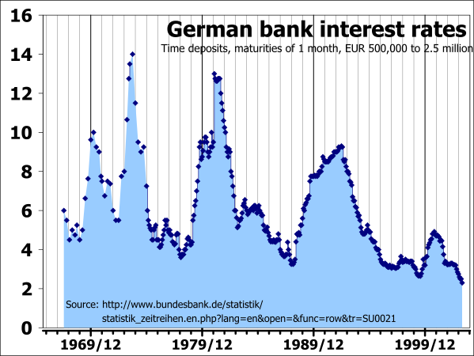

Table of Contents
6. Bond Valuation
6.1. The Basics of Interest Rates
6.1.1. Understanding the Cost of Money
6.1.2. Interest Rate Levels
6.1.3. Drivers of Market Interest Rates
6.1.4. The Term Structure
6.2. Additional Detail on Interest Rates
6.2.1. The Yield Curve
6.2.2. Using the Yield Curve to Estimate Interest Rates in the Future
6.2.3. Macroeconomic Factors Influencing the Interest Rate
6.3. Key Characteristics of Bonds
6.3.1. Par Value
6.3.2. Coupon Interest Rate
6.3.3. Maturity Date
6.3.4. Call Provisions
6.3.5. Sinking Funds
6.3.6. Other Features
6.4. Understanding Bonds
6.4.1. The Nature of Bonds
6.4.2. Duration
6.4.3. Indenture
6.4.4. Ratings
6.5. Advantages and Disadvantages of Bonds
6.5.1. Advantages of Bonds
6.5.2. Disadvantages of Bonds
6.6. Types of Bonds
6.6.1. Government Bonds
6.6.2. Zero-Coupon Bonds
6.6.3. Floating-Rate Bonds
6.6.4. Other Types of Bonds
6.7. Bond Markets
6.7.1. Purchase Process
6.7.2. Price Transparency
6.8. Valuing Bonds
6.8.1. Present Value of Payments
6.8.2. Par Value at Maturity
6.8.3. Yield to Maturity
6.8.4. Inflation Premium
6.8.5. Differences Between Real and Nominal Rates
6.8.6. Time to Maturity
6.8.7. Calculating Yield to Maturity Using the Bond Price
6.8.8. Impact of Payment Frequency on Bond Prices
6.8.9. Deciding to Refund Bonds
6.9. Bond Risk
6.9.1. Price Risk
6.9.2. Reinvestment Risk
6.9.3. Comparing Price Risk and Reinvestment Risk
6.9.4. Default Risk
6.9.5. Bond Rating System
6.9.6. Bankruptcy and Bond Value
6. Bond Valuation
6.1. The Basics of Interest Rates
6.1.1. Understanding the Cost of Money
The cost of money is the opportunity cost of holding money instead of investing it, depending on the rate of interest.
Learning Objective
Explain the sources of the cost of money
Key Points
- The concept of the cost of money has its basis, as does the subject of finance in general, in the time value of money.
- The time value of money refers to the fact that a dollar in hand today is worth more than a dollar promised at some future time.
- The trade-off between money now (holding money) and money later (investing) depends on, among other things, the rate of interest you can earn by investing. Therefore, interest is the cost of money.
Key Terms
- interest rate
- The percentage of an amount of money charged for its use per some period of time. It can also be thought of as the cost of not having money for one period, or the amount paid on an investment per year.
- Opportunity cost
- The cost of an opportunity forgone (and the loss of the benefits that could be received from that opportunity); the most valuable forgone alternative.
The concept of the cost of money has its basis, as does the subject of finance in general, in the time value of money. The time value of money is the value of money, taking into consideration the interest earned over a given amount of time. If offered a choice between \$100 today or \$100 in a year's time - and there is a positive real interest rate throughout the year - a rational person will choose \$100 today. This is described by economists as time preference. Time preference can be measured by auctioning off a risk free security--like a US Treasury bill. If a \$100 note, payable in one year, sells for \$80 now, then \$80 is the present value of the note that will be worth \$100 a year from now. This fee paid as compensation for the current use of assets is known as interest. In other words, the concept of interest describes the cost of having funds tied up in investments or savings. The cost of money is the opportunity cost of holding money in hands instead of investing it.
Furthermore, the time value of money is related to the concept of opportunity cost. The cost of any decision includes the cost of the most forgone alternative. The cost of money is the opportunity cost of holding money in hands instead of investing it. The trade-off between money now (holding money) and money later (investing) depends on, among other things, the rate of interest that can be earned by investing. An investor with money has two options: to spend it right now or to save it. The financial compensation for saving it as against spending it is that the money value will accrue through the compound interest that he will receive from a borrower (the bank account or investment in which he has the money).
6.1.2. Interest Rate Levels
An interest rate is the rate at which interest is paid by a borrower for the use of money that they borrow from a lender.
Learning Objective
Describe the crowding out phenomenon
Key Points
- In the U.S., the Federal Reserve (often referred to as 'The Fed') implements monetary policies largely by targeting the federal funds rate.
- Expansionary monetary policy is traditionally used to try to combat unemployment in a recession by lowering interest rates in the hope that easy credit will entice businesses into expanding.
- Contractionary monetary policy is intended to slow inflation in hopes of avoiding the resulting distortions and deterioration of asset values.
- Crowding out is a phenomenon occurring when expansionary fiscal policy causes interest rates to rise, thereby reducing investment spending.
Key Term
- monetary policy
- The process by which the monetary authority of a country controls the supply of money, often targeting a rate of interest for the purpose of promoting economic growth and stability.
An interest rate is the rate at which interest is paid by a borrower for the use of money that they borrow from a lender. Changes in interest rate levels signal the status of the economy. As a vital tool of monetary policy, interest rates are kept at target levels - taking into account variables like investment, inflation, and unemployment - for the purpose of promoting economic growth and stability. In the U.S., the Federal Reserve (often referred to as 'The Fed') implements monetary policies largely by targeting the federal funds rate. This is the rate that banks charge each other for overnight loans of federal funds, which are the reserves held by banks at the Fed.
{kind=link}
The effective federal funds rate in the U.S. charted over more than half a century.
Monetary policies are referred to as either expansionary or contractionary. Expansionary policy is traditionally used to try to combat unemployment in a recession by lowering interest rates in the hope that easy credit will entice businesses into expanding. An expansionary policy increases the total supply of money in the economy more rapidly than usual. Contractionary policy is intended to slow inflation in hopes of avoiding the resulting distortions and deterioration of asset values. Contractionary policy increases interest rate levels by expanding the money supply more slowly than usual or even shrinking it. Most central banks around the world assume and expect that lowering interest rates (expansionary monetary policies) would produce the effect of increasing investments and consumptions. However, lowering interest rates can sometimes lead to the creation of massive economic bubbles, when a large amount of investments are poured into the real estate market and stock market.
Crowding Out
Crowding out is a phenomenon occurring when expansionary fiscal policy causes interest rates to rise, thereby reducing investment spending. That means increase in government spending crowds out investment spending. This change in fiscal policy shifts equilibrium in the goods market. A fiscal expansion increases equilibrium income. If interest rates are unchanged, an increase in the level of aggregate demand will follow. This increase in demand must be met by rise in output.
With this increase in equilibrium income, the quantity of money demanded is higher. Because there is an excessive demand for real balances, the interest rate rises. Firms planned spending declines at higher interest rates, thus the aggregate demand falls. The adjustment of interest rates and their impact on aggregate demand dampen the expansionary effect of the increased government spending.
6.1.3. Drivers of Market Interest Rates
Market interest rates are mostly driven by inflationary expectations, alternative investments, risk of investment, and liquidity preference.
Learning Objective
Calculate the nominal interest rate of a given investment
Key Points
- A market interest rate is the rate at which interest is paid by a borrower for the use of money that they borrow from a lender in the market.
- Economists generally agree that the interest rates yielded by any investment take into account: the risk-free cost of capital, inflationary expectations, the level of risk in the investment, and the costs of the transaction.
- A basic interest rate pricing model for an asset is presented by the following formula: in = ir + pe + rp + lp.
Key Terms
- inflation
- An increase in the general level of prices or in the cost of living.
- abscond
- To flee; to withdraw from.
- interest rate risk
- the potential for loss that arises for bond owners from fluctuating interest rates
- liquidity
- Availability of cash over short term: ability to service short-term debt.
A market interest rate is the rate at which interest is paid by a borrower for the use of money that they borrow from a lender in the market.
Factors Influencing Market Interest Rates
Deferred consumption: When money is loaned the lender delays spending the money on consumption goods. According to time preference theory, people prefer goods now to goods later. In a free market there will be a positive interest rate.
Inflationary expectations: Most economies generally exhibit inflation, meaning a given amount of money buys fewer goods in the future than it will now. The borrower needs to compensate the lender for this. If the inflationary expectation goes up, then so does the market interest rate and vice versa.
{kind=link}
World map showing inflation rate by country.
Alternative investments: The lender has a choice between using his money in different investments. If he chooses one, he forgoes the returns from all the others. Different investments effectively compete for funds, boosting the market interest rate up.
Risks of investment: There is always a risk that the borrower will go bankruptcy, abscond, die, or otherwise default on the loan. This means that a lender generally charges a risk premium to ensure that, across his investments, he is compensated for those that fail. The greater the risk is, the higher the market interest rate will get.
Liquidity preference: People prefer to have their resources available in a form that can immediately be exchanged, rather than a form that takes time or money to realize. If people are willing to hold more money in hands for convenience, the money supply will contract, increasing the market interest rate.
Market Impact
There is a market for investments which ultimately includes the money market, bond market, stock market, and currency market as well as retail financial institutions like banks. Exactly how these markets function are sometimes complicated. However, economists generally agree that the interest rates yielded by any investment take into account: the risk-free cost of capital, inflationary expectations, the level of risk in the investment, and the costs of the transaction. This rate incorporates the deferred consumption and alternative investments elements of interest. A basic interest rate pricing model for an asset is presented by the following formula: in = ir + pe + rp + lp.
Assuming perfect information, pe is the same for all participants in the market, and this is identical to: in = i*n+ rp + lp
where in is the nominal interest rate on a given investment, ir is the risk-free return to capital, pe = inflationary expectations, i*n = the nominal interest rate on a short-term risk-free liquid bond (such as U.S. Treasury Bills), rp = a risk premium reflecting the length of the investment and the likelihood the borrower will default, lp = liquidity premium (reflecting the perceived difficulty of converting the asset into money and thus into goods).
6.1.4. The Term Structure
Term structure of interest rates describes how rates change over time.
Learning Objective
Differentiate between the different theories explaining the different term structures of interest rates
Key Points
- Term structure of interest rates is often referred to as the yield curve.
- The expectation hypothesis of the term structure of interest rates is the proposition that the long-term rate is determined by the market's expectation for the short-term rate plus a constant risk premium.
- The liquidity premium theory asserts that long-term interest rates not only reflect investors' assumptions about future interest rates but also include a premium for holding long-term bonds.
- In the segmented market hypothesis, financial instruments of different terms are not substitutable; therefore, supply and demand in the markets for short-term and long-term instruments is determined largely independently.
Key Terms
- risk premium
- A risk premium is the minimum amount of money by which the expected return on a risky asset must exceed the known return on a risk-free asset, or the expected return on a less risky asset, in order to induce an individual to hold the risky asset rather than the risk-free asset.
- premium
- the price above par value at which a security is sold
- premium bond
- a debt instrument bought at a price above par value
- Liquidity premium
- Liquidity premium is a term used to explain a difference between two types of financial securities (e.g. stocks), that have all the same qualities except liquidity.
- term structure of interest rates
- the relationship between the interest on a debt contract and the maturity of the contract
Term structure is a phrase used to describe how a given quantity or variable changes with time. In the case of bonds, time to maturity, or terms, vary from short-term - usually less than a year - to long-term - 10, 20, 30, 50 years, etc. Term structure of interest rates is often referred to as the yield curve.
In finance, the yield curve is a curve showing several yields or interest rates across different contract lengths (2 month, 2 year, 20 year, etc...) for a similar debt contract. The curve shows the relationship between the interest rate (or cost of borrowing) and the time to maturity - known as the "term" - of the debt for a given borrower in a given currency. ""
{kind=link}
The US dollar yield curve as of February 9, 2005. The curve has a typical upward sloping shape.
The curve allows an interest rate pattern to be determined, which can then be used to discount cash flows appropriately. Unfortunately, most bonds carry coupons, so the term structure must be determined using the prices of these securities. There are three main economic theories attempting to explain different term structures of interest rates. Two of the theories are extreme positions, while the third attempts to find a middle ground between two extremes.
The expectation hypothesis of the term structure of interest rates is the proposition that the long-term rate is determined by the market's expectation for the short-term rate plus a constant risk premium. Shortcomings of the expectations theory is that it neglects the risks inherent in investing in bonds, namely interest rate risk and reinvestment rate risk.
The liquidity premiumtheory asserts that long-term interest rates not only reflect investors' assumptions about future interest rates but also include a premium for holding long-term bonds (investors prefer short-term bonds to long-term bonds). This is called the term premium or the liquidity premium. This premium compensates investors for the added risk of having their money tied up for a longer period, including the greater price uncertainty. Because of the term premium, long-term bond yields tend to be higher than short-term yields, and the yield curve slopes upward. Long-term yields are also higher not just because of the liquidity premium, but also because of the risk premium added by the risk of default from holding a security over the long-term.
In the segmented market hypothesis, financial instruments of different terms are not substitutable. As a result, the supply and demand in the markets for short-term and long-term instruments is determined largely independently. Prospective investors decide in advance whether they need short-term or long-term instruments. If investors prefer their portfolio to be liquid, they will prefer short-term instruments to long-term instruments. Therefore, the market for short-term instruments will receive a higher demand. Higher demand for the instrument implies higher prices and lower yield. This explains the stylized fact that short-term yields are usually lower than long-term yields. This theory explains the predominance of the normal yield curve shape. However, because the supply and demand of the two markets are independent, this theory fails to explain the observed fact that yields tend to move together (i.e., upward and downward shifts in the curve).
6.2. Additional Detail on Interest Rates
6.2.1. The Yield Curve
A yield curve shows the relation between interest rate levels (or cost of borrowing) and the time to maturity.
Learning Objective
Describe different yield curves
Key Points
- In finance the yield curve is a curve showing several yields or interest rates across different contract lengths for a similar debt contract.
- Based on the shape of the yield curve, we have normal yield curves, steep yield curves, flat or humped yield curves, and inverted yield curves.
- There are three main economic theories that attempt to explain different term structures of interest rates, namely the expectation hypothesis, the liquidity premium theory, and the segmented market hypothesis.
Key Terms
- yield curve
- the graph of the relationship between the interest on a debt contract and the maturity of the contract
- treasury bill
- A United States Treasury security is a government debt issued by the United States Department of the Treasury through the Bureau of the Public Debt. Treasury securities are the debt financing instruments of the United States federal government. They are often referred to simply as treasuries. There are four types of marketable treasury securities: Treasury bills, Treasury notes, Treasury bonds, and Treasury Inflation Protected Securities (TIPS), in which Treasury bills have the shortest maturity of one year or less.
- Treasury bond
- A United States Treasury security is a government debt issued by the United States Department of the Treasury through the Bureau of the Public Debt. Treasury securities are the debt financing instruments of the United States federal government, and they are often referred to simply as Treasuries. There are four types of marketable treasury securities: Treasury bills, Treasury notes, Treasury bonds, and Treasury Inflation Protected Securities (TIPS), in which Treasury bonds have the longest maturity, from 20 years to 30 years.
Overview
In finance the yield curve is a curve showing several yields or interest rates across different contract lengths (two month, two year, 20 year, etc...) for a similar debt contract. The curve shows the relation between the (level of) interest rate (cost of borrowing) and the time to maturity, known as the "term," of the debt for a given borrower in a given currency. Based on the shape of the yield curve, we have normal yield curves, steep yield curves, flat or humped yield curves, and inverted yield curves .
{kind=link}
This graph is an example of a yield curve on Israeli Non-Linked Fixed Rate government bonds.
The yield curve is normal meaning that yields rise as maturity lengthens (i.e., the slope of the yield curve is positive). This positive slope reflects investor expectations for the economy to grow in the future and, importantly, for this growth to be associated with a greater expectation that inflation will rise in the future rather than fall. This expectation of higher inflation leads to expectations that the central bank will tighten monetary policy by raising short term interest rates in the future to slow economic growth and dampen inflationary pressure.
Shapes of Curves
Sometimes, treasury bond yield averages higher than that of treasury bills (e.g. 20-year Treasury yield rises higher than the three-month Treasury yield). In situations when this gap increases, the economy is expected to improve quickly in the future. This type of steep yield curve can be seen at the beginning of an economic expansion (or after the end of a recession). Here, economic stagnation will have depressed short-term interest rates. However, rates begin to rise once the demand for capital is re-established by growing economic activity.
A flat yield curve is observed when all maturities have similar yields, whereas a humped curve results when short-term and long-term yields are equal and medium-term yields are higher than those of the short-term and long-term. A flat curve sends signals of uncertainty in the economy.
An inverted yield curve occurs when long-term yields fall below short-term yields. Why this would happen is that when lenders are seeking long-term debt contracts more aggressively than short-term debt contracts. The yield curve "inverts," with interest rates (yields) being lower and lower for each longer periods of repayment so that lenders can attract long-term borrowing .
Theories
There are three main economic theories attempting to explain different term structures of interest rates. Two of the theories are extreme positions, while the third attempts to find a middle ground between the former two.
The expectation hypothesis of the term structure of interest rates is the proposition that the long-term rate is determined by the market's expectation for the short-term rate plus a constant risk premium. Shortcomings of expectations theory is that it neglects the risks inherent in investing in bonds, namely interest rate risk and reinvestment rate risk.
The liquidity premium theory asserts that long-term interest rates not only reflect investors' assumptions about future interest rates, but also include a premium for holding long-term bonds (investors prefer short term bonds to long term bonds), called the term premium or the liquidity premium. This premium compensates investors for the added risk of having their money tied up for a longer period, including the greater price uncertainty. Because of the term premium, long-term bond yields tend to be higher than short-term yields, and the yield curve slopes upward. Long term yields are also higher not just because of the liquidity premium, but also because of the risk premium added by the risk of default from holding a security over the long term.
In the segmented market hypothesis, financial instruments of different terms are not substitutable. As a result, the supply and demand in the markets for short-term and long-term instruments is determined largely independently. Prospective investors decide in advance whether they need short-term or long-term instruments. If investors prefer their portfolio to be liquid, they will prefer short-term instruments to long-term instruments. Therefore, the market for short-term instruments will receive a higher demand. Higher demand for the instrument implies higher prices and lower yield. This explains the stylized fact that short-term yields are usually lower than long-term yields. This theory explains the predominance of the normal yield curve shape. However, because the supply and demand of the two markets are independent, this theory fails to explain the observed fact that yields tend to move together (i.e., upward and downward shifts in the curve).
6.2.2. Using the Yield Curve to Estimate Interest Rates in the Future
Yield curves on bonds and government provided securities are correlative, and are useful in projected future rates.
Learning Objective
Understand the conceptual implications of bond yield rates is they pertain to broader market interest rates
Key Points
- While the strict calculations involved in interest rate projections via bond yield curves come in a number of varieties (and complexities), it's useful to note that there are strong correlations between the two.
- Yield curves combine the interest rate compounded over the duration of the debt security's lifetime to demonstrate yield over time.
- The financial stress index uses bond yield rates to determine projected future yield curves, which can indicate a variety of economic predictions (such as recessions and interest rate changes).
- Market expectations theory uses existing projects for short-term interest rates based upon yield to project longer-term interest rates.
- The Heath-Jarrow-Morton Framework is a well-established norm for predicting interest rates based upon various inputs (including yield curves). Understanding the conceptual inputs to this model gives some scope as to interest rate derivation.
Key Terms
- yield curve
- A curve that shows the compounded interest rate applied to the value of the security over its lifetime.
- recessions
- Downturns in a given economic environment.
Defining the Yield Curve
For debt contracts, the overall duration of time of the debt security coupled with the interest rate compounded over that time frame will illustrate the overall yield of the security during its lifetime. This is referred to as a yield curve. When this is applied to U.S. treasury securities in respect to interest rates, useful information regarding projected interest rates in the future over time can be estimated. This is carefully monitored by many traders, and utilized as a point of comparison or benchmark for other investments (particularly valuation of bonds).
{kind=link}
This yield curve from 2005 demonstrates the projected yield over time of USD. As you can see, this is a typical yield curve shape, as the longer the contract is held out the higher the rate of return (with diminishing returns).
Relationship to the Business Cycle
Through assessing the slope of a yield curve on debt instruments such as governmental treasury bonds, investors can estimate the overall health of the economy in the future (i.e. inflation, interest rates, recessions, growth). Inverted yield curves are typically predictors of recession, while positively sloped yield curves indicate inflationary growth.
The Financial Stress Index
Defined as the rate of difference between a 10-year treasury bond rate and a 3-month treasury bond rate, the Financial Stress Index is a useful tool in projected future economic well-being. In fact, each of the recessionary periods since 1970 have demonstrated an inverted yield curve when subjected to Financial Stress Test just prior to that recessionary period.
Market Expectations (i.e. Pure Expectations)
When it comes to interest rates specifically, yield curves are useful constructs in projecting future behavior. The market expectations theory assumes that various maturities are perfect substitutes, and as a result the shape of the yield curve represents market expectations over time in relation to interest rates. In short, through investor expectations of what the 1-year interest rates will be next year, the current 2-year interest rate can be calculated as the compounding of this year's 1-year interest rate by next year's expected 1-year interest rate. Or, as an equation:
(ist and ilt are the expected short-term and actual long-term interest rates, respectively)
Heath-Jarrow-Morton Framework
When it comes to predicting future interest rates, the Heath-Jarrow-Morton framework is considered a standard approach. It focuses on modeling the evolution of the interest rate curve (instantaneous forward rate curve in particular). The equation itself is a rather evolved derivation, incorporating bond prices, forward rates, risk free rates, the Wiener process, Leibniz's rule, and Fubini's Theorem. While the details of this calculation are a bit outside the scope of discussion here, the equation can ultimately be described as:
For the sake of this discussion, it suffices to say that the input of existing yield curves is useful in projected future interest rates under a number of varying perspectives.
6.2.3. Macroeconomic Factors Influencing the Interest Rate
Taylor explained the rule of determining interest rates using three variables: inflation rate, GDP growth, and the real interest rate.
Learning Objective
Describe how the nominal interest rate is influenced by inflation, output, and other economic conditions
Key Points
- In economics, the Taylor rule is a monetary-policy rule that stipulates how much the Central Bank should change the nominal interest rate in response to changes in inflation, output, or other economic conditions.
- If the inflationary expectation goes up, then so does the market interest rate and vice versa.
- If output gap is positive, it is called an "inflationary gap," possibly creating inflation, signaling a increase in interest rates made by the Central Bank; if output gap is negative, it is called a "recessionary gap," possibly signifying deflation and a reduction in interest rates.
Key Terms
- Recessionary gap
- An inflationary gap, in economics, is the amount by which the real Gross domestic product, or real GDP, is less than the potential GDP.
- Real interest rate
- The "real interest rate" is the rate of interest an investor expects to receive after allowing for inflation. It can be described more formally by the Fisher equation, which states that the real interest rate is approximately the nominal interest rate minus the inflation rate.
- inflationary gap
- An inflationary gap, in economics, is the amount by which the real gross domestic product, or real GDP, exceeds potential GDP.
Interest Rate Overview
An interest rate is the rate at which interest is paid by a borrower for the use of money that they borrow from a lender in the market. The interest rates are influenced by macroeconomic factors. In economics, a Taylor rule is a monetary-policy rule that stipulates how much the Central Bank should change the nominal interest rate in response to changes in inflation, output, or other economic conditions. In particular, the rule stipulates that for each 1% increase in inflation, the Central Bank should raise the nominal interest rate by more than one percentage point.
{kind=link}
Overnight rates in Turkey are estimated to fall in 2013, indicating a loosened monetary policy.
Taylor Rule
According to Taylor's original version of the rule, the nominal interest rate should respond to divergences of actual inflation rates from target inflation rates and of actual Gross Domestic Product (GDP) from potential GDP:
it = πt + r*t + απ(πt - π*t) + αy(yt - y*t)
In this equation, it is the target short-term nominal interest rate (e.g., the federal fund rates in the United States), πt is the rate of inflation as measured by the GDP deflator, π*t is the desired rate of inflation, r*t is the assumed equilibrium real interest rate, yt is the logarithm of real GDP, and y*t is the logarithm of potential output, as determined by a linear trend.
In other words, (πt - π*t)is inflation expectations that influence interest rates. Most economies generally exhibit inflation, meaning a given amount of money buys fewer goods in the future than it will now. The borrower needs to compensate the lender for this. If the inflationary expectation goes up, then so does the market interest rate and vice versa.
Output Gap
The GDP gap or the output gap is (yt - y*t). If this calculation yields a positive number, it is called an "inflationary gap" and indicates the growth of aggregate demand is outpacing the growth of aggregate supply (or high level of employment), possibly creating inflation, signaling an increase in interest rates made by the Central Bank; if the calculation yields a negative number it is called a "recessionary gap," which is accompanied by a low employment rate, possibly signifying deflation and a reduction in interest rates.
In this equation, both απ and αy should be positive (as a rough rule of thumb, Taylor's 1993 paper proposed setting απ =αy = 0.5). That is, the rule "recommends" a relatively high interest rate (a "tight" monetary policy) when inflation is above its target or when output is above its full-employment level, in order to reduce inflationary pressure. It recommends a relatively low interest rate ("easy" monetary policy) in the opposite situation to stimulate output.
Taylor explained the rule in simple terms using three variables: inflation rate, GDP growth, and the equilibrium real interest rate.
6.3. Key Characteristics of Bonds
6.3.1. Par Value
Par value is the amount of money a holder will get back once a bond matures; a bond can be sold at par, at premium, or discount.
Learning Objective
Assess when a bond should be sold at its par value
Key Points
- When a bond trades at a price above the face value, it is said to be selling at a premium. When a bond sells below face value, it is said to be selling at a discount.
- A bond's price fluctuates throughout its life in response to a number of variables, including interest rates and time to maturity.
- Pull to par is the effect in which the price of a bond converges to par value as time passes. At maturity, the price of a debt instrument in good standing should equal its par (or face value).
Key Terms
- resale market
- The resale market, also called "secondary market" or "aftermarket," is the financial market in which previously issued financial instruments, such as stock, bonds, options, and futures, are bought and sold.
- par value
- the stated value or amount of a bill or a note
Par value/face value (also known as the principal) is the amount of money a holder will get back once a bond matures. Par value means stated value or face value in finance and accounting. From this comes the expressions at par (at the par value), over par (over par value) and under par (under par value).
A newly issued bond usually sells at the par value. Corporate bonds normally have a par value of \$1,000, but this amount can be much greater for government bonds. What confuses many people is that the par value is not the price of the bond. A bond's price fluctuates throughout its life in response to a number of variables, including interest rates and time to maturity. When a bond trades at a price above the face value, it is said to be selling at a premium. When a bond sells below face value, it is said to be selling at a discount.
Pull to par is the effect in which the price of a bond converges to par value as time passes. At maturity, the price of a debt instrument in good standing should equal its par (or face value). Another name for this effect is "reduction of maturity. " It results from the difference between market interest rate and the nominal yield on the bond.
A bond selling at par has a coupon rate such that the bond is worth an amount equivalent to its original issue value or its value upon redemption at maturity. In other words, if you buy a bond at face value, or par, when it is issued and hold it until it matures, you'll earn interest at the stated, or coupon, rate. For example, if you buy a 20-year \$1,000 bond paying \$550 a year for 20 years. The yield, or your return on investment, will also be 5%. You will get your \$1,000 back when the 20 years are up. You can also buy and sell bonds through a broker after their date of issue. This is known as the "secondary market" or "resale market. "
6.3.2. Coupon Interest Rate
The coupon rate is the amount of interest that the bondholder will receive per payment, expressed as a percentage of the par value.
Learning Objective
Classify bonds based on coupon rate
Key Points
- Coupon interest rate is usually fixed throughout the life of the bond. It can also vary with a money market index.
- Not all bonds have coupons. Zero-coupon bonds are those that pay no coupons and thus have a coupon rate of 0%.
- Based on different coupon rates, there are fixed rate bonds, floating rate bonds, and inflation linked bonds.
Key Term
- time value of money
- The value of money, figuring in a given amount of interest, earned over a given amount of time.
The coupon rate is the amount of interest that the bondholder will receive expressed as a percentage of the par value. Thus, if a bond has a par value of 1,000 and a coupon rate of 10,100 a year during the time between when the bond is issued and when it matures. Usually this rate is fixed throughout the life of the bond. It can also vary with a money market index, such as LIBOR, or it can be even more exotic. The bond will also specify when the interest is to be paid, whether monthly, quarterly, semi-annually, or annually.
The name "coupon" arose because in the past, paper bond certificates were issued that had coupons attached to them, one for each interest payment. On the due dates, the bondholder would hand in the coupon to a bank in exchange for the interest payment.
Not all bonds have coupons. Zero-coupon bonds are those that pay no coupons and thus have a coupon rate of 0%. Such bonds make only one payment–the payment of the face value on the maturity date. Normally, to compensate the bondholder for the time value of money, the price of a zero-coupon bond will always be less than its face value on any date before the maturity date. The bondholder receives the full principal amount on the redemption date. An example of zero coupon bonds is Series E savings bonds issued by the U.S. government.
Based on different coupon rates, bonds are classified into many types. Fixed-rate bonds have a coupon that remains constant throughout the life of the bond. A variation are stepped-coupon bonds, with a coupon that increases during the life of the bond.
Floating rate notes (FRNs, floaters) have a variable coupon that is linked to a reference rate of interest, such as LIBOR or Euribor. For example, the coupon may be defined as three month USD LIBOR + 0.20%. The coupon rate is recalculated periodically, typically every one or three months.
Inflation linked bonds (linkers), in which the principal amount and the interest payments are indexed to inflation. The interest rate is normally lower than for fixed rate bonds with a comparable maturity. However, as the principal amount grows, the payments increase with inflation. The United Kingdom was the first sovereign issuer to issue inflation linked Gilts in the 1980s. Treasury Inflation-Protected Securities (TIPS) and I-bonds are examples of inflation linked bonds issued by the U.S. government.
6.3.3. Maturity Date
Maturity date refers to the final payment date of a loan or other financial instrument.
Learning Objective
Define a US security based on its maturity date
Key Points
- As long as all due payments have been made, the issuer has no further obligations to the bond holders after the maturity date.
- The length of time until the maturity date is often referred to as the term or tenor or maturity of a bond.
- In the market for United States Treasury securities, there are three categories of bond maturities: short term, medium term, and long term.
Key Terms
- callable
- A callable bond (also called "redeemable bond") is a type of bond (debt security) that allows the issuer of the bond to retain the privilege of redeeming the bond at some point before the bond reaches its date of maturity.
- puttable
- Puttable bond (put bond, putable, or retractable bond) is a bond with an embedded put option. The holder of the puttable bond has the right, but not the obligation, to demand early repayment of the principal.
In finance, maturity date or redemption date, refers to the final payment date of a loan or other financial instrument, at which point the principal (and all remaining interest) is due to be paid.
The issuer has to repay the nominal amount on the maturity date. As long as all due payments have been made, the issuer has no further obligations to the bond holders after the maturity date. The length of time until the maturity date is often referred to as the term or tenor or maturity of a bond. The maturity can be any length of time, although debt securities with a term of less than one year are generally designated money market instruments rather than bonds. Most bonds have a term of up to 30 years. Some bonds have been issued with terms of 50 years or more and, historically, there have been some issues with no maturity date (irredeemables).
In the market for United States Treasury securities, there are three categories of bond maturities:
- short term (bills): maturities between 1 to 5 years (instruments with maturities less than one year are called "Money Market Instruments");
- medium term (notes): maturities between 6 to 12 years; and
- long term (bonds): maturities greater than 12 years.
Normally the maturity of a bond is fixed. However, it is important to note that bonds are sometimes "callable,"which means that the issuer of the debt is able to pay back the principal at any time. In this case, the maturity date is the day when the bond is called. Thus, investors should inquire, before buying any fixed-income securities, whether the bond is callable or not. Bonds can also be puttable, meaning that the holder has the right, but not the obligation, to demand early repayment of the principal. Similarly, the maturity date, if applicable, is the date as the bond is redeemed.
6.3.4. Call Provisions
A callable bond allows the issuer to redeem the bond before the maturity date; this is likely to happen when interest rates go down.
Learning Objective
Classify a bond based on its call provision
Key Points
- A callable bond is a type of bond that allows the issuer of the bond to retain the privilege of redeeming the bond at some point before the bond reaches its date of maturity.
- If interest rates in the market have gone down by the time of the call date, the issuer will be able to refinance its debt at a cheaper level and so will be incentivized to call the bonds it originally issued.
- Most callable bonds allow the issuer to repay the bond at par. With some bonds, the issuer has to pay a premium, known as the call premium.
- Price of callable bond = Price of straight bond – Price of call option. Price of a callable bond is always lower than the price of a straight bond because the call option adds value to an issuer.
Key Terms
- par
- Equal value; equality of nominal and actual value; the value expressed on the face or in the words of a certificate of value, as a bond or other commercial paper.
- straight bond
- A straight bond is a bond with no embedded options (call or put options).
Occasionally a bond may contain an embedded option. That is, it grants option-like features to the holder or the issuer. A callable bond (also called redeemable bond) is a type of bond that allows the issuer of the bond to retain the privilege of redeeming the bond at some point before the bond reaches its date of maturity. In other words, on the call date, the issuer has the right, but not the obligation, to buy back the bonds from the bond holders at a defined call price. Technically speaking, the bonds are not really bought and held by the issuer. They are instead cancelled immediately.
Call dates are the dates on which callable bonds can be redeemed early.
There are three main categories.
- A Bermudan callable has several call dates, usually coinciding with coupon dates.
- A European callable has only one call date. This is a special case of a Bermudan callable.
- An American callable can be called at any time until the maturity date.
Most callable bonds allow the issuer to repay the bond at par. With some bonds, the issuer has to pay a premium, known as the call premium. This is mainly the case for high-yield bonds. These have very strict covenants, restricting the issuer in its operations. To be free from these covenants, the issuer can repay the bonds early, but only at a high cost.
The issuer has an option, for which it pays in the form of a higher coupon rate. If interest rates in the market have gone down by the time of the call date, the issuer will be able to refinance its debt at a cheaper level. The issuer will be incentivized to call the bonds it originally issued. Another way to look at this interplay is that as interest rates go down, the price of the bonds goes up. Therefore, it is advantageous to buy the bonds back at par value. With a callable bond, investors have the benefit of a higher coupon than they would have had with a straight, non-callable bond. On the other hand, if interest rates fall, the bonds will likely be called, and they can only invest at the lower rate.
The price behavior of a callable bond is the opposite of that of puttable bond. Since call option and put option are not mutually exclusive, a bond may have both options embedded.
Price of callable bond = Price of straight bond – Price of call option
Price of a callable bond is always lower than the price of a straight bond because the call option adds value to an issuer. Similarly, yield on a callable bond is higher than the yield on a straight bond.
6.3.5. Sinking Funds
A sinking fund is a method by which an organization sets aside money to retire debts.
Learning Objective
Describe how a sinking fund operates in regards to a bond issue
Key Points
- Sinking fund provision of the corporate bond indenture requires a certain portion of the issue to be retired periodically.
- A sinking fund reduces credit risk but presents reinvestment risk to bondholders.
- For the creditors, the fund reduces the risk the organization will default when the principal is due: it reduces credit risk. However, if the bonds are callable, this comes at a cost to creditors, because the organization has an option on the bonds.
Key Terms
- debentures
- A debenture is a document that either creates a debt or acknowledges it, and it is a debt without collateral.
- Preferred Stock
- Stock with a dividend, usually fixed, that is paid out of profits before any dividend can be paid on common stock. It also has priority to common stock in liquidation.
- call provision
- the right for the issuer to buy back the bond at a predetermined price at a certain time in future
In modern finance, a sinking fund is a method by which an organization sets aside money over time to retire its indebtedness by repaying or purchasing outstanding loans and securities held against the entity. More specifically, it is a fund into which money can be deposited, so that over time preferred stock, debentures or stocks can be retired. Sinking funds can also be used to set aside money for purposes of replacing capital equipment as it becomes obsolete .
Sinking fund provision of the corporate bond indenture requires a certain portion of the issue to be retired periodically. The entire bond issue can be liquidated by the maturity date. Issuers may either pay to trustees, which in turn call randomly selected bonds in the issue, or, alternatively, purchase bonds in open market, then return them to trustees.
A sinking fund may operate in one or more of the following ways:
- The firm may repurchase a fraction of the outstanding bonds in the open market each year.
- The firm may repurchase a fraction of outstanding bonds at a special call price associated with the sinking fund provision (they are callable bonds).
- The firm has the option to repurchase the bonds at either the market price or the sinking fund price, whichever is lower. The firm can only repurchase a limited fraction of the bond issue at the sinking fund price. At best some indentures allow firms to use a doubling option, which allows repurchase of double the required number of bonds at the sinking fund price.
- A less common provision is to call for periodic payments to a trustee, with the payments invested so that the accumulated sum can be used for retirement of the entire issue at maturity: instead of the debt amortizing over the life, the debt remains outstanding and a matching asset accrues. Thus the balance sheet consists of Asset = Sinking fund, Liability = Bonds
For the creditors, the fund reduces the risk the organization will default when the principal is due: it reduces credit risk. However, if the bonds are callable, this comes at a cost to creditors, because the organization has an option on the bonds: The firm will choose to buy back discount bonds (selling below par) at their market price,while exercising its option to buy back premium bonds (selling above par) at par. Therefore, if interest rates fall and bond prices rise, a firm will benefit from the sinking fund provision that enables it to repurchase its bonds at below-market prices. In this case, the firm's gain is the bondholder's loss–thus callable bonds will typically be issued at a higher coupon rate, reflecting the value of the option.
6.3.6. Other Features
Other important features of bonds include the yield, market price and putability of a bond.
Learning Objective
Describe the effect a bond's market price has on its yield
Key Points
- The yield is the rate of return received from investing in the bond. It usually refers either to the current yield, or to the yield to maturity or redemption yield.
- The market price of a tradeable bond will be influenced by the amounts, currency and timing of the interest payments and capital repayment due, the quality of the bond, and the available redemption yield of other comparable bonds which can be traded in the markets.
- Some bonds give the holder the right to force the issuer to repay the bond before the maturity date on the put dates. These are referred to as retractable or putable bonds.
Key Terms
- Yield to maturity
- The internal rate of return on a bond held to maturity, assuming scheduled payment of principal and interest.
- clean price
- the price of a bond excluding any interest that has accrued since issue or the most recent coupon payment.
Some other important features of bonds are presented below, namely the yield, market price and putability of a bond. ""
Yield
The yield is the rate of return received from investing in the bond. It usually refers either to the current yield, which is simply the annual interest payment divided by the current market price of the bond (often the clean price), or to the yield to maturity or redemption yield. Yield to maturity is a more useful measure of the return of the bond, taking into account the current market price, the amount and timing of all remaining coupon payments, and of the repayment due on maturity.
{kind=link}
Development of yield to maturity of bonds of 2019 maturity of a number of Eurozone governments.
Market Price
The market price of a tradeable bond will be influenced - amongst other things - by the amounts, currency and timing of the interest payments and capital repayment due; the quality of the bond; and the available redemption yield of other comparable bonds which can be traded in the markets. The price can be quoted as clean or dirty. "Dirty" refers to the actual price to be paid; while "clean" includes an adjustment for accrued interest. The issue price at which investors buy the bonds when they are first issued will typically be approximately equal to the nominal amount. The net proceeds that the issuer receives are thus the issue price, less issuance fees. The market price of the bond will vary over its life: it may trade at a premium (above par, usually because market interest rates have fallen since issue), or at a discount (below par, if market rates have risen or there is a high probability of default on the bond).
Putability
Some bonds give the holder the right to force the issuer to repay the bond before the maturity date on the put dates. These are referred to as retractable or putable bonds. Put dates are the dates on which putable bonds can be redeemed early. This type of bond protects investors: if interest rates rise after bond purchase, the future value of coupon payments will become less valuable. Therefore, investors sell bonds back to the issuer and may lend proceeds elsewhere at a higher rate. Bondholders are ready to pay for such protection by accepting a lower yield relative to that of a straight bond. A death put is an optional redemption feature on a debt instrument allowing the beneficiary of the estate of a deceased bondholder to put (sell) the bond (back to the issuer) at face value in the event of the bondholder's death or legal incapacitation.
Price of puttable bond = Price of straight bond + Price of put option
Price of a puttable bond is always higher than the price of a straight bond because the put option adds value to an investor. Yield on a puttable bond is lower than the yield on a straight bond.
6.4. Understanding Bonds
6.4.1. The Nature of Bonds
A bond is an instrument of indebtedness of the bond issuer to the holders.
Learning Objective
Distinguish the various types of bonds from other types of securities
Key Points
- A bond is an instrument of indebtedness of the bond issuer to the holders. The issuer owes the holders a debt and, depending on the terms of the bond, is obliged to pay them interest (the coupon) and/or to repay the principal at a later date, termed the maturity.
- Bonds provide the borrower with external funds to finance long-term investments, or, in the case of government bonds, to finance current expenditure.
- Bonds and stocks are both securities, but the major difference between the two is that (capital) stockholders have an equity stake in the company (i.e. they are owners), whereas bondholders have a creditor stake in the company (i.e. they are lenders).
Key Terms
- municipal bonds
- A municipal bond is a bond issued by an American city or other local government, or their agencies.
- Treasury bonds
- A United States Treasury bond is a government debt issued by the United States Department of the Treasury through the Bureau of the Public Debt, with a maturity of 20 years to 30 years.
- corporate bonds
- A corporate bond is a bond issue by a corporation. It is a bond that a corporation issues to raise money effectively in order to expand its business.
Nature of Bonds
A bond is an instrument of indebtedness of the bond issuer to the holders, as such it is often referred to as a debt instrument. A bond is a debt security, under which the issuer owes the holders a debt and, depending on the terms of the bond, is obliged to pay them interest (the coupon) and/or repay the principal at a later date, termed the maturity. Interest is usually payable at fixed intervals (semiannual, annual, sometimes monthly).
Bonds are issued by public authorities, credit institutions, companies, and supranational institutions in the primary market. Both individuals and companies can purchase bonds.
However, very often the bond is negotiable, i.e. the ownership of the instrument can be transferred in the secondary market. A bond is a financial security that represents a promise by a company or government to repay a certain amount, with interest, to the bondholder.
Types of Bonds
The main categories of bonds are corporate bonds, municipal bonds, and U.S. Treasury bonds, notes, and bills, which are collectively referred to simply as "Treasuries. " Two features of a bond - credit quality and duration - are the principal determinants of a bond's interest rate. Bond maturities range from a 90-day Treasury bill to a 30-year government bond. Corporate and municipal bonds are typically in the three to 10-year range.
Overview of the Instrument
A bond is a form of loan: the holder of the bond is the lender (creditor), the issuer of the bond is the borrower (debtor), and the coupon is the interest. Bonds provide the borrower with external funds to finance long-term investments, or, in the case of government bonds, to finance current expenditure. Certificates of deposits (CDs), or short term commercial papers, are considered to be money market instruments and not bonds: the main difference is in the instruments length of term.
Bonds and stocks are both securities, but the major difference between the two is that (capital) stockholders have an equity stake in the company (they are owners), whereas bondholders have a creditor stake in the company (they are lenders). Another difference is that bonds usually have a defined term, or maturity, after which the bond is redeemed, whereas stocks may be outstanding indefinitely. An exception is an irredeemable bond, such as Consols, which is a perpetuity, that is, a bond with no maturity.
6.4.2. Duration
Duration is the weighted average of the times until fixed cash flows of a financial asset are received.
Learning Objective
Define the different types of duration
Key Points
- A good approximation for bond price changes due to yield is the duration, a measure for interest rate risk.
- The Macaulay duration is the name given to the weighted average time until cash flows are received and is measured in years. It really makes sense only for an instrument with fixed cash flows.
- The modified duration is the name given to the price sensitivity and is the percentage change in price for a unit change in yield. It really makes sense only for an instrument with fixed cash flows.
- The modified duration is a derivative (rate of change) or price sensitivity and measures the percentage rate of change of price with respect to yield. The concept of modified duration can be applied to interest-rate sensitive instruments with non-fixed cash flows.
Key Terms
- Convexity
- As interest rates change, the price does not change linearly, but rather is a convex function of interest rates. Convexity is a measure of the curvature of how the price of a bond changes as the interest rate changes. Specifically, duration can be formulated as the first derivative of the price function of the bond with respect to the interest rate in question, and the convexity as the second derivative.
- Yield to maturity
- The yield to maturity (YTM) of a bond or other fixed-interest security, such as gilts, is the internal rate of return (IRR, overall interest rate) earned by an investor who buys the bond today at the market price, assuming that the bond will be held until maturity and that all coupon and principal payments will be made on schedule.
Duration
In finance, the duration of a financial asset that consists of fixed cash flows, for example a bond, is the weighted average of the times until those fixed cash flows are received. When an asset is considered as a function of yield, duration also measures the price sensitivity to yield, the rate of change of price with respect to yield, or the percentage change in price for a parallel shift in yields. Since cash flows for bonds are usually fixed, a price change can come from two sources: The passage of time (convergence towards par) which is predictable and a change in the yield.
The yield-price relationship is inverse and investors would ideally wish to have a measure of how sensitive the bond price is to yield changes. A good approximation for bond price changes due to yield is the duration, a measure for interest rate risk. For large yield changes convexity can be added to improve the performance of the duration. A more important use of convexity is that it measures the sensitivity of duration to yield changes.
Types of Durations
The dual use of the word "duration" in the Macaulay duration and the modified duration, as both the weighted average time until repayment and as the percentage change in price, often causes confusion. The Macaulay duration is the name given to the weighted average time until cash flows are received and is measured in years.
The Macaulay duration is the name given to the weighted average time until cash flows are received and is measured in years.
Where: i indexes the cash flows, PVi is the present value of the cash payment from an asset, ti is the time in years until the payment will be received, and V is the present value of all cash payments from the asset.
The Modified duration is the name given to the price sensitivity and is the percentage change in price for a unit change in yield.
The modified duration is the name given to the price sensitivity and is the percentage change in price for a unit change in yield.
Where: k is the compounding frequency per year (1 for annual, 2 for semi-annual, 12 for monthly, 52 for weekly, and so on), y is the is the yield to maturity for an asset.
When yields are continuously-compounded the Macaulay duration and the modified duration will be numerically equal. When yields are periodically-compounded the Macaulay duration and the modified duration will differ slightly and in this case there is a simple relation between the two. The modified duration is used more than the Macaulay duration.
The Macaulay duration and the modified duration are both termed "duration" and have the same (or close to the same) numerical value, but it is important to keep in mind the conceptual distinctions between them. The Macaulay duration is a time measure with units in years and really makes sense only for an instrument with fixed cash flows. For a standard bond, the Macaulay duration will be between 0 and the maturity of the bond. It is equal to the maturity if and only if the bond is a zero-coupon bond.
The modified duration, on the other hand, is a derivative (rate of change) or price sensitivity and measures the percentage rate of change of price with respect to yield. The concept of modified duration can be applied to interest-rate sensitive instruments with non-fixed cash flows and can thus be applied to a wider range of instruments than can the Macaulay duration. For everyday use, the equality (or near-equality) of the values for the Macaulay duration and the modified duration can be a useful aid to intuition.
6.4.3. Indenture
A bond indenture is a legal contract issued to lenders that defines commitments and responsibilities of the seller and the buyer.
Learning Objective
Review the rights and responsibilities of parties to a bond
Key Points
- Terms of indentures include the interest rate, maturity date, repayment dates, convertibility, pledge, promises, representations, covenants, and other terms of the bond offering.
- A bond indenture is held by a trustee. If the company fails to live up to the terms of the bond indenture, the trustee may bring legal action against the company on behalf of the bondholders.
- The offering memorandum, also known as a prospectus, is a document that describes a financial security for potential buyers.
Key Terms
- convertibility
- Quality of a bond that allows the holder to convert into shares of common stock in the issuing company or cash of equal value, at an agreed-upon price.
- indenture
- a document, written as duplicates separated by indentations, specifying such a contract
- public debt offerings
- A public debt offering is the offering of debt securities of a government, a company or a similar corporation to the public.
A bond indenture (also called a trust indenture or deed of trust) is a legal contract issued to lenders. The specifications given within the bond indenture define the responsibilities and commitments of the seller as well as those of the buyer by describing key terms such as the interest rate, maturity date, repayment dates, convertibility, pledge, promises, representations, covenants, and other terms of the bond offering. Failure to meet the payment requirements calls for drastic penalties, including liquidation of the issuer's assets. Bond indenture (also trust indenture or deed of trust) is a legal contract issued to lenders.
Because it would be impractical for the corporation to enter into a direct agreement with each of the many bondholders, the bond indenture is held by a trustee - usually a commercial bank or other financial institution - appointed by the issuing firm to represent the rights of the bondholders. The issuer of a bond will use the indenture to describe detail about the issuer and the bond trustee for interested investors to research the background of the bond issue. This is to ensure that the bondholder has a clear idea of when to expect interest payments, as well as whom to contact if he or she has questions or concerns. If the company fails to live up to the terms of the bond indenture, the trustee may bring legal action against the company on behalf of the bondholders.
When the offering memorandum is prepared in advance of marketing a bond, the indenture will typically be summarized in the "description of notes" section. This offering memorandum, also known as a prospectus, is a document that describes a financial security for potential buyers. A prospectus commonly provides investors with material information about mutual funds, stocks, bonds, and other investments, such as a description of the company's business, financial statements, biographies of officers and directors, detailed information about their compensation, any litigation that is taking place, a list of material properties, and any other material information.
In the United States, public debt offerings in excess of \$10 million require the use of an indenture of trust under the Trust Indenture Act of 1939. The rationale for this is that it is necessary to establish a collective action mechanism under which creditors can collect in a fair, orderly manner if default takes place (like that which occurs during bankruptcy).
6.4.4. Ratings
Bond credit rating agencies assess and report the credit worthiness of a corporation's or government's debt issues.
Learning Objective
Use the ratings system to assess the risk associated with different bonds
Key Points
- Ratings play a critical role in determining how much companies and other entities that issue debt, including sovereign governments, have to pay to access credit markets; for example, the amount of interest they pay on their issued debt.
- The ratings are assigned by credit rating agencies such as Moody's, Standard & Poor's, and Fitch. Ratings to have letter designations (such as AAA, B, CC), which represent the quality of a bond.
- A bond is considered investment-grade (IG) if its credit rating is BBB- or higher by Standard & Poor's, or Baa3 or higher by Moody's, or BBB(low) or higher by DBRS. Bond ratings below BBB/Baa are not considered to be investment grade; such bonds are called junk bonds.
Key Term
- credit rating agencies
- A credit rating agency (CRA) is a company that assigns credit ratings to issuers of certain types of debt obligations, as well as to the debt instruments themselves.
Ratings Overview
In investment, the bond credit rating assesses the credit worthiness of a corporation's or government's debt issue. The credit rating is analogous to a credit rating for individuals. The "quality" of the issue refers to the probability that the bondholders will receive the amounts promised on the due dates.
The credit rating is a financial indicator to potential investors of debt securities, such as bonds. Ratings play a critical role in determining the amount that companies (and other entities that issue debt, including sovereign governments) have to pay to access credit markets; for example, the amount of interest that must be paid on issued debt. The ratings are assigned by credit rating agencies, such as Moody's, Standard & Poor's, and Fitch Ratings, and are given in letter designations (AAA, B, CC), which represent the quality of a bond. Generally they are bonds that are judged by the rating agency as likely enough to meet payment obligations; banks are thus allowed to invest in them. ""
{kind=link}
Credit ratings are used to report on the credit worthiness of a bond issuing company or government
Investment-grade Bonds
A bond is considered investment-grade, or IG, if its credit rating is BBB- or higher by Standard & Poor's, or Baa3 or higher by Moody's, or BBB(low) or higher by DBRS.
Bond ratings below BBB/Baa are not considered to be investment-grade; these bonds are called junk bonds. Junk bonds are also called high-yield bonds. These are bonds that are rated below investment grade by the credit rating agencies. As these bonds are more risky than investment grade bonds, investors expect them to earn a higher yield. The threshold between investment-grade and speculative-grade ratings has important market implications for issuers' borrowing costs.
The risks associated with investment-grade bonds (or investment-grade corporate debt) are considered significantly higher than those associated with first-class government bonds. The difference between rates for first-class government bonds and investment-grade bonds is called "investment-grade spread. " The range of this spread is an indicator of the market's belief in the stability of the economy. The higher these investment-grade spreads (or risk premiums) are, the weaker the economy is considered.
Rating Agency Criticism
Until the early 1970s, bond credit ratings agencies were paid for their work by investors who wanted impartial information on the credit worthiness of securities issuers and their particular offerings. Starting in the early 1970s, the "Big Three" ratings agencies (S&P, Moody's, and Fitch) began to receive payment for their work by the securities issuers for whom they issued ratings, which led to current charges that these ratings agencies can no longer always be impartial when issuing ratings for securities issuers. Securities issuers have been accused of "shopping" for the best ratings from S&P, Moody's, and Fitch, in order to attract investors, until at least one of the agencies delivers favorable ratings.
6.5. Advantages and Disadvantages of Bonds
6.5.1. Advantages of Bonds
Bonds have some advantages over stocks, including relatively low volatility, high liquidity, legal protection, and a variety of term structures.
Learning Objective
Discuss the advantages of owning a bond
Key Points
- Bonds are a debt security under which the issuer owes the holders a debt and, depending on the terms of the bond, is obliged to pay them interest (the coupon) and or repay the principal at a later date, which is termed the maturity.
- The volatility of bonds (especially short and medium dated bonds) is lower than that of equities (stocks). Thus bonds are generally viewed as safer investments than stocks.
- Bonds are often liquid – it is often fairly easy for an institution to sell a large quantity of bonds without affecting the price much.
- Bondholders also enjoy a measure of legal protection: under the law of most countries, if a company goes bankrupt, its bondholders will often receive some money back (the recovery amount).
- There are also a variety of bonds to fit different needs of investors.
Key Terms
- inflation-linked bonds
- Inflation-indexed bonds (also known as inflation-linked bonds or colloquially as linkers) are bonds where the principal is indexed to inflation. They are thus designed to cut out the inflation risk of an investment.
- Zero coupon bonds
- A zero-coupon bond (also called a discount bond or deep discount bond) is a bond bought at a price lower than its face value, with the face value repaid at the time of maturity.
- Convertible bonds
- A convertible bond is a type of bond that the holder can convert into shares of common stock in the issuing company or cash of equal value, at an agreed-upon price.
Definition and Purpose of a Bond
In finance, a bond is an instrument of indebtedness of the bond issuer to the holders. It is a debt security under which the issuer owes the holders a debt and, depending on the terms of the bond, is obliged to pay them interest (the coupon). In addition, the issuer might have to repay the principal at a later date, which is termed the maturity. Interest is usually payable at fixed intervals (semiannual, annual, and sometimes monthly). Very often the bond is negotiable; in other words, the ownership of the instrument can be transferred in the secondary market.
Bonds are bought and traded mostly by institutions like central banks, sovereign wealth funds, pension funds, insurance companies, hedge funds, and banks. Insurance companies and pension funds have liabilities, which essentially include fixed amounts payable on predetermined dates. They buy the bonds to match their liabilities and may be compelled by law to do this. Most individuals who want to own bonds do so through bond funds. Still, in the U.S., nearly 10% of all outstanding bonds are held directly by households.
Advantages of Bonds
Bonds have a clear advantage over other securities. The volatility of bonds (especially short and medium dated bonds) is lower than that of equities (stocks). Thus bonds are generally viewed as safer investments than stocks. In addition, bonds do suffer from less day-to-day volatility than stocks, and the interest payments of bonds are sometimes higher than the general level of dividend payments.
Bonds are often liquid. It is often fairly easy for an institution to sell a large quantity of bonds without affecting the price much, which may be more difficult for equities. In effect, bonds are attractive because of the comparative certainty of a fixed interest payment twice a year and a fixed lump sum at maturity.
Bondholders also enjoy a measure of legal protection: under the law of most countries, if a company goes bankrupt, its bondholders will often receive some money back (the recovery amount), whereas the company's equity stock often ends up valueless. Furthermore, bonds come with indentures (an indenture is a formal debt agreement that establishes the terms of a bond issue) and covenants (the clauses of such an agreement). Covenants specify the rights of bondholders and the duties of issuers, such as actions that the issuer is obligated to perform or is prohibited from performing.
There are also a variety of bonds to fit different needs of investors, including fixed rated bonds, floating rate bonds, zero coupon bonds, convertible bonds, and inflation linked bonds.
6.5.2. Disadvantages of Bonds
Bonds are subject to risks such as the interest rate risk, prepayment risk, credit risk, reinvestment risk, and liquidity risk.
Learning Objective
Discuss the disadvantages of owning a bond
Key Points
- A bond is an instrument of indebtedness of the bond issuer to the holders. It is a debt security under which the issuer owes the holders a debt and, depending on the terms of the bond, is obliged to pay them interest and possibly repay the principal at a later date, which is termed the maturity.
- Fixed rate bonds are subject to interest rate risk, meaning that their market prices will decrease in value when the generally prevailing interest rates rise.
- Bonds are also subject to various other risks such as call and prepayment risk, credit risk, reinvestment risk, liquidity risk, event risk, exchange rate risk, volatility risk, inflation risk, sovereign risk, and yield curve risk.
- A company's bondholders may lose much or all their money if the company goes bankrupt. There is no guarantee of how much money will remain to repay bondholders.
- Some bonds are callable. This creates reinvestment risk, meaning the investor is forced to find a new place for his money. As a consequence, the investor might not be able to find as good a deal, especially because this usually happens when interest rates are falling.
Key Terms
- Reinvestment risk
- The reinvestment risk is the possibility that the investor might be forced to find a new place for his money. As a consequence, the investor might not be able to find as good a deal, especially because this usually happens when interest rates are falling.
- Exchange rate risk
- The exchange rate risk is a financial risk posed by an exposure to unanticipated changes in the exchange rate between two currencies.
Definition and Purpose of a Bond
A bond is a debt owed by the enterprise to the bondholder. Commercial bonds are normally issued in units of 1,000 dollars. Bondholders receive regular interest on their investment, depending on the terms of the bond. As a safe security, bonds are widely bought and traded by financial institutions. However, bonds have certain disadvantages. A bond is a debt owned by the enterprise to the bondholder.
Fixed rate bonds are subject to interest rate risk, meaning that their market prices will decrease in value when the generally prevailing interest rates rise. Since the payments are fixed, a decrease in the market price of the bond means an increase in its yield. When the market interest rate rises, the market price of bonds will fall, reflecting the ability of investors to get a higher interest rate on their money elsewhere — perhaps by purchasing a newly issued bond that already features the newly higher interest rate.
Disadvantages of Bonds
Bonds are also subject to various other risks such as call and prepayment risk, credit risk, reinvestment risk, liquidity risk, event risk, exchange rate risk, volatility risk, inflation risk, sovereign risk, and yield curve risk.
Price changes in a bond will immediately affect mutual funds that hold these bonds. If the value of the bonds in a trading portfolio falls, the value of the portfolio also falls. This can be damaging for professional investors such as banks, insurance companies, pension funds, and asset managers (irrespective of whether the value is immediately "marked to market" or not). If there is any chance a holder of individual bonds may need to sell his bonds and "cash out", the interest rate risk could become a real problem.
Bond prices can become volatile depending on the credit rating of the issuer – for instance if credit rating agencies like Standard and Poor's and Moody's upgrade or downgrade the credit rating of the issuer. An unanticipated downgrade will cause the market price of the bond to fall. As with interest rate risk, this risk does not affect the bond's interest payments (provided the issuer does not actually default), but puts at risk the market price, which affects mutual funds holding these bonds, and holders of individual bonds who may have to sell them.
A company's bondholders may lose much or all their money if the company goes bankrupt. Under the laws of many countries (including the United States and Canada), bondholders are in line to receive the proceeds of the sale of the assets of a liquidated company ahead of some other creditors. Bank lenders, deposit holders (in the case of a deposit taking institution such as a bank) and trade creditors may take precedence. There is no guarantee of how much money will remain to repay bondholders. In a bankruptcy involving reorganization or recapitalization, as opposed to liquidation, bondholders may end up having the value of their bonds reduced, often through an exchange for a smaller number of newly issued bonds.
Some bonds are callable, meaning that even though the company has agreed to make payments plus interest toward the debt for a certain period of time, the company can choose to pay off the bond early. This creates reinvestment risk, meaning the investor is forced to find a new place for his money. As a consequence, the investor might not be able to find as good a deal, especially because this usually happens when interest rates are falling.
6.6. Types of Bonds
6.6.1. Government Bonds
A government bond is a bond issued by a national government denominated in the country's domestic currency.
Learning Objective
Analyze the risks and characteristics of government bonds
Key Points
- A government bond is a bond issued by a national government, generally promising to pay a certain amount (the face value) on a certain date, as well as periodic interest payments. Such bonds are often denominated in the country's domestic currency.
- In the primary market, Government Bonds are often issued via auctions at Stock Exchanges. In the secondary market, government bonds are traded at Stock Exchanges.
- Although, government bonds are usually referred to as risk-free, there are currency, inflation, and default risks for government bondholders.
Key Terms
- purchasing power
- Purchasing power (sometimes retroactively called adjusted for inflation) is the amount of goods or services that can be purchased with a unit of currency.
- purchasing power parity
- a theory of long-term equilibrium exchange rates based on relative price levels of two countries
A government bond is a bond issued by a national government, generally promising to pay a certain amount (the face value) on a certain date as well as periodic interest payments. Such bonds are often denominated in the country's domestic currency. Government bonds are sometimes regarded as risk-free bonds because national governments can raise taxes or reduce spending up to a certain point. In many cases, they "print more money" to redeem the bond at maturity. Most developed country governments are prohibited by law from printing money directly, that function having been relegated to their central banks. However, central banks may buy government bonds in order to finance government spending, thereby monetizing the debt .
Bonds issued by national governments in foreign currencies are normally referred to as sovereign bonds. Investors in sovereign bonds denominated in foreign currency have the additional risk that the issuer may be unable to obtain foreign currency to redeem the bonds. For example, in the 2010 Greek debt crisis the debt was held by Greece in Euros. One proposed solution was for Greece to go back to issuing its own Drachma.
In the primary market, Government Bonds are often issued via auctions at Stock Exchanges. There are several different methods of issuing such as auctions, including guarantee, combined auction and guarantee, and others. There are two types of interest rates: fixed and floating. In the secondary market, government bonds are traded at Stock Exchanges. Unlikely equity system, the bond secondary market uses a completely different system with different method of trading. At the secondary market, each bond will be assigned with very own bond code (ISIN code).
Government bonds are usually referred to as risk-free bonds because the government can raise taxes or create additional currency in order to redeem the bond at maturity. Some counter examples do exist where a government has defaulted on its domestic currency debt, such as Russia in 1998 (the "ruble crisis"), although this is very rare (see national bankruptcy). Another example is Greece in 2011. Its bonds were considered very risky, in part because Greece did not have its own currency.
There is currency risk for government bondholders. As an example, in the U.S., Treasury securities are denominated in U.S. dollars. In this instance, the term "risk-free" means free of credit risk. However, other risks still exist, such as currency risk for foreign investors (for example non-U.S. investors of U.S. Treasury securities would have received lower returns in 2004 because the value of the U.S. dollar declined against most other currencies). Secondly, there is inflation risk, in that the principal repaid at maturity will have less purchasing power than anticipated if the inflation rate is higher than expected. Many governments issue inflation-indexed bonds, which protect investors against inflation risk by increasing the interest rate given to the investor as the inflation rate of the economy increases.
6.6.2. Zero-Coupon Bonds
A zero-coupon bond is a bond with no coupon payments, bought at a price lower than its face value, with the face value repaid at the time of maturity.
Learning Objective
Distinguish zero coupon bonds from other types
Key Points
- Zero-coupon bonds may be created from fixed rate bonds by a financial institution separating ("stripping off") the coupons from the principal. In other words, the separated coupons and the final principal payment of the bond may be traded separately.
- Zero coupon bonds have a duration equal to the bond's time to maturity, which makes them sensitive to any changes in the interest rates.
- Pension funds and insurance companies like to own long maturity zero-coupon bonds since these bonds' prices are particularly sensitive to changes in the interest rate and, therefore, offset or immunize the interest rate risk of these firms' long-term liabilities.
Key Terms
- immunize
- In finance, interest rate immunization is a strategy that ensures that a change in interest rates will not affect the value of a portfolio. Similarly, immunization can be used to ensure that the value of a pension fund's or a firm's assets will increase or decrease in exactly the opposite amount of their liabilities, thus leaving the value of the pension fund's surplus or firm's equity unchanged, regardless of changes in the interest rate.
- Pension funds
- A pension fund is any plan, fund, or scheme which provides retirement income.
Zero coupon bonds were first introduced in 1960s, but they did not become popular until the 1980s. A zero-coupon bond (also called a "discount bond" or "deep discount bond") is a bond bought at a price lower than its face value, with the face value repaid at the time of maturity. It does not make periodic interest payments, or have so-called "coupons," hence the term zero-coupon bond. When the bond reaches maturity, its investor receives its par (or face) value. Examples of zero-coupon bonds include U.S. Treasury bills, U.S. savings bonds, and long-term zero-coupon bonds.
Zero-coupon bonds may be created from fixed rate bonds by a financial institution separating ("stripping off") the coupons from the principal. In other words, the separated coupons and the final principal payment of the bond may be traded separately. Investment banks or dealers separate coupons from the principal of coupon bonds, which is known as the "residue," so that different investors may receive the principal and each of the coupon payments. This creates a supply of new zero coupon bonds. The coupons and residue are sold separately to investors. Each of these investments then pays a single lump sum. This method of creating zero coupon bonds is known as stripping, and the contracts are known as strip bonds. "STRIPS" stands for Separate Trading of Registered Interest and Principal Securities.
Zero coupon bonds may be long- or short-term investments. Long-term zero coupon maturity dates typically start at 10 to 15 years. The bonds can be held until maturity or sold on secondary bond markets. Short-term zero coupon bonds generally have maturities of less than one year and are called bills. The U.S. Treasury bill market is the most active and liquid debt market in the world.
Zero coupon bonds have a duration equal to the bond's time to maturity, which makes them sensitive to any changes in the interest rates. The impact of interest rate fluctuations on strip bonds is higher than for a coupon bond.
Pension funds and insurance companies like to own long maturity zero-coupon bonds because of the bonds' high duration. This high duration means that these bonds' prices are particularly sensitive to changes in the interest rate and, therefore, offset or immunize the interest rate risk of these firms' long-term liabilities.
6.6.3. Floating-Rate Bonds
Floating rate bonds are bonds that have a variable coupon equal to a money market reference rate (e.g., LIBOR), plus a quoted spread.
Learning Objective
Describe a floating-rate bond
Key Points
- FRBs are typically quoted as a spread over the reference rate. At the beginning of each coupon period, the coupon is calculated by taking the fixing of the reference rate for that day and adding the spread. A typical coupon would look like three months USD LIBOR +0.20%.
- FRBs carry little interest rate risk. A FRB has a duration close to zero, and its price shows very low sensitivity to changes in market rates. As FRBs are almost immune to interest rate risk. The risk that remains is a credit risk.
- Securities dealers make markets in FRBs. They are traded over the counter, instead of on a stock exchange. In Europe, most FRBs are liquid, as the biggest investors are banks. In the United States, FRBs are mostly held to maturity, so the markets aren't as liquid.
Key Terms
- duration
- A measure of the sensitivity of the price of a financial asset to changes in interest rates, computed for a simple bond as a weighted average of the maturities of the interest and principal payments associated with it
- LIBOR
- The London Interbank Offered Rate is the average interest rate estimated by leading banks in London that they would be charged if borrowing from other banks.
- floating-rate bond
- a debt instruments with a variable coupon
Floating rate bonds (FRBs) are bonds that have a variable coupon, equal to a money market reference rate, like LIBOR or federal funds rate, plus a quoted spread (i.e., quoted margin). The spread is a rate that remains constant. Almost all FRBs have quarterly coupons (i.e., they pay out interest every three months), though counter examples do exist. At the beginning of each coupon period, the coupon is calculated by taking the fixing of the reference rate for that day and adding the spread. A typical coupon would look like three months USD LIBOR +0.20%.
In the United States, government sponsored enterprises (GSEs), such as the Federal Home Loan Banks, the Federal National Mortgage Association (Fannie Mae), and the Federal Home Loan Mortgage Corporation (Freddie Mac), are important issuers. In Europe, the main issuers are banks.
There are many variations of floating-rate bonds. For instance, some FRBs have special features, such as maximum or minimum coupons, called "capped FRBs" and "floored FRBs. " Those with both minimum and maximum coupons are called collared FRBs. Perpetual FRBs are another form of FRBs that are also called irredeemable or unrated FRBs and are akin to a form of capital. FRBs can also be obtained synthetically by the combination of a fixed rate bond and an interest rate swap. This combination is known as an "asset swap. "
FRBs carry little interest rate risk. A FRB has a duration close to zero, and its price shows very low sensitivity to changes in market rates. When market rates rise, the expected coupons of the FRB increase in line with the increase in forward rates, which means its price remains constant. Thus, FRBs differ from fixed rate bonds, whose prices decline when market rates rise. As FRBs are almost immune to interest rate risk, they are considered conservative investments for investors who believe market rates will increase. The risk that remains is credit risk.
Securities dealers make markets in FRBs. They are traded over the counter, instead of on a stock exchange. In Europe, most FRBs are liquid, as the biggest investors are banks. In the United States, FRBs are mostly held to maturity, so the markets aren't as liquid. In the wholesale markets, FRBs are typically quoted as a spread over the reference rate.
6.6.4. Other Types of Bonds
Other bonds include register vs. bearer bonds, convertible bonds, exchangeable bonds, asset-backed securities, and foreign currency bonds.
Learning Objective
Classify the different types of bonds
Key Points
- Bonds directly linked to interest rates include fixed rate bonds, floating rate bonds, and zero coupon bonds.
- Convertible bonds are bonds that let a bondholder exchange a bond to a number of shares of the issuer's common stock. Exchangeable bonds allows for exchange to shares of a corporation other than the issuer.
- Asset-backed securities are bonds whose interest and principal payments are backed by underlying cash flows from other assets.
- Subordinated bonds are those that have a lower priority than other bonds of the issuer in case of liquidation.
- Foreign currency bonds are issued by companies, banks, governments, and other sovereign entities in foreign currencies, as it may appear to be more stable and predictable than their domestic currency.
Key Terms
- gross domestic product
- A measure of the economic production of a particular territory in financial capital terms over a specific time period.
- tranches
- One of a number of related securities offered as part of the same transaction.
- LIBOR
- The London Interbank Offered Rate is the average interest rate estimated by leading banks in London that they would be charged if borrowing from other banks.
General Categorization
Based on coupon interest rates, bonds can be classified into
- Fixed rate bonds
- Floating rate bonds
- Zero-coupon bonds
Fixed rate bonds have a coupon that remains constant throughout the life of the bond. A variation is a stepped-coupon bonds, whose coupon increases during the life of the bond.
Floating rate notes (FRNs, floaters) have a variable coupon that is linked to a reference rate of interest, such as LIBOR or Euribor. For example the coupon may be defined as three month USD LIBOR + 0.20%. The coupon rate is recalculated periodically, typically every one or three months.
Zero-coupon bonds pay no regular interest. They are issued at a substantial discount to par value, so that the interest is effectively rolled up to maturity (and usually taxed as such). The bondholder receives the full principal amount on the redemption date. Zero-coupon bonds may be created from fixed rate bonds by a financial institution separating ("stripping off") the coupons from the principal. In other words, the separated coupons and the final principal payment of the bond may be traded separately .
Additional Types
There are additional special classes of bonds, including:
Inflation linked bonds (linkers) are those in which the principal amount and the interest payments are indexed to inflation. It is one type of floating rate bond. The interest rate is normally lower than for fixed rate bonds, with a comparable maturity. However, as the principal amount grows, the payments increase with inflation. Treasury Inflation-Protected Securities (TIPS) and I-bonds are examples of inflation linked bonds issued by the U.S. government. There are also other indexed bonds. For example equity-linked notes and bonds indexed on a business indicator (income, added value) or on a country's gross domestic product (GDP).
Convertible bonds are bonds that let a bondholder exchange a bond for a number of shares of the issuer's common stock. Exchangeable bonds allows for exchange to shares of a corporation other than the issuer.
Asset-backed securities are bonds whose interest and principal payments are backed by underlying cash flows from other assets. Examples of asset-backed securities are mortgage-backed securities (MBS's), collateralized mortgage obligations (CMOs), and collateralized debt obligations (CDOs).
Subordinated bonds are those that have a lower priority than other bonds of the issuer in case of liquidation. In case of bankruptcy, there is a hierarchy of creditors. First the liquidator is paid, then government taxes, etc. The first bond holders in line to be paid are those holding what is called senior bonds. After they have been paid, the subordinated bond holders are paid. As a result, the risk is higher. Therefore, subordinated bonds usually have a lower credit rating than senior bonds. The main examples of subordinated bonds can be found in bonds issued by banks and asset-backed securities. The latter are often issued in tranches. The senior tranches get paid back first, the subordinated tranches later.
Perpetual bonds are also often called perpetuities or "perps. " They have no maturity date. The most famous of these are the UK Consols, which are also known as Treasury Annuities or Undated Treasuries.
A registered bond is a bond whose ownership (and any subsequent purchaser) is recorded by the issuer or by a transfer agent. It is the alternative to a bearer bond. Interest payments, and the principal upon maturity, are sent to the registered owner. On the contrary, a bearer bond is an official certificate issued without a named holder. In other words, the person who has the paper certificate can claim the value of the bond. Often they are registered by a number to prevent counterfeiting, but may be traded like cash. Bearer bonds are very risky because they can be lost or stolen. Especially after federal income tax began in the United States, bearer bonds were seen as an opportunity to conceal income or assets.
A serial bond is a bond that matures in installments over a period of time. In effect, a \$100,000, 5-year serial bond would mature in a \$20,000 annuity over a 5-year interval.
Some companies, banks, governments, and other sovereign entities may decide to issue bonds in foreign currencies because it may appear to be more stable and predictable than their domestic currency. Issuing bonds denominated in foreign currencies also gives issuers the ability to access investment capital available in foreign markets. Some examples include:
- Eurodollar bond - U.S. dollar-denominated bond issued by a non-U.S. (European) entity.
- U.S. Yankee bond - a US dollar-denominated bond issued by a non-U.S. entity in the U.S. market.
- Samurai bond - a Japanese yen-denominated bond issued by a non-Japanese entity in the Japanese market.
- Bulldog bond - a pound-sterling-denominated bond issued in England by a foreign institution or government.
- Kimchi bond - a Korean won-denominated bond issued by a non-Korean entity in the Korean market.
6.7. Bond Markets
6.7.1. Purchase Process
Most individuals purchase bonds via a broker or through bond funds.
Learning Objective
Describe the process for purchasing a bond
Key Points
- Buying a bond involves setting up an account with a broker and requesting that the broker buy bonds on the buyer's behalf.
- An individual can also purchase bonds by investing in bond funds, which hold baskets of bonds rather than competing for individual bond sales.
- Most bond funds pay out dividends more frequently than individual bonds.
Key Terms
- hedge funds
- An investment fund that can undertake a wider range of investment and trading activities than other funds, but which is generally only open to certain types of investors specified by regulators.
- bond funds
- A bond fund or debt fund is a fund that invests in bonds or other debt securities. Bond funds can be contrasted with stock funds and money funds.
- Pension funds
- Any plan, fund, or scheme which provides retirement income.
Bonds are bought and traded mostly by institutions like central banks, sovereign wealth funds, pension funds, insurance companies, hedge funds, and banks. Insurance companies and pension funds have liabilities which essentially include fixed amounts payable on predetermined dates. They buy the bonds to match their liabilities, and may be compelled by law to do this. Most individuals who want to own bonds purchase bonds via a broker or do so through bond funds. Still, in the U.S., nearly 10% of all bonds outstanding are held directly by households.
Buying a bond involves setting up an account with a broker and requesting that the broker buy bonds on the buyer's behalf. Brokers also can furnish considerable market information regarding prices, products, and market conditions. Like with stocks, accounts can be set up with an online discount broker to buy bonds while paying lower transaction fees. It is a good idea to look at several different brokers and their commission rates and services before choosing one. Additionally, bonds can be purchased directly from the U.S. federal government without the use of a broker and without paying broker commission fees.
An individual can also purchase bonds by investing in bond funds, which hold baskets of bonds rather than competing for individual bond sales. Bond funds typically pay periodic dividends that include interest payments on the fund's underlying securities plus periodic realized capital appreciation. Bond funds typically pay higher dividends than certificates of deposits (CDs) and money market accounts. Most bond funds pay out dividends more frequently than individual bonds. Fund managers provide dedicated management and save the individual investor from researching issuer creditworthiness, maturity, price, face value, coupon rate, yield, and countless other factors that affect bond investing. Bond funds invest in many individual bonds, so that even a relatively small investment is diversified.
6.7.2. Price Transparency
Since bonds are traded in a decentralized, over-the-counter market dominated by dealers, there can be a lack of price transparency.
Learning Objective
Explain why bond markets may not have price transparency
Key Points
- A market is transparent if much is known–by many–about what products, services, or capital assets are available at what price and where.
- In most developed bond markets, such as the United States, Japan, and western Europe, bonds trade in decentralized, dealer-based, over-the-counter markets.
- Poor transparency contributes to investor differences in bond valuations, as well as other inefficiencies that may lead to economic losses for market participants and, ultimately, inhibit business development.
Key Terms
- market liquidity
- In business, economics or investment, market liquidity is an asset's ability to be sold without causing a significant movement in the price and with minimum loss of value.
- transparency
- (figuratively) openness, degree of accessibility to view
In economics, a market is transparent if much is known–by many– about what products, services, or capital assets are available at what price and where.
There are two types of price transparency:
- Knowing what price will be charged to me
- Knowing what price will be charged to you
The two types of price transparency have different implications for differential pricing. Bond markets, unlike stock or share markets, sometimes do not have a centralized exchange or trading system. Rather, in most developed bond markets such as the United States, Japan, and western Europe, bonds trade in decentralized, dealer-based, over-the-counter markets. This convention, combined with the large number of debt issues outstanding, is largely responsible for the lack of price transparency that exists in the fixed income markets.
Poor transparency contributes to investor differences in bond valuations, as well as other inefficiencies that may lead to economic losses for market participants, and, ultimately, inhibit business development. In such a market, market liquidity is provided by dealers and other market participants committing risk capital to trading activity. In the bond market, when an investor buys or sells a bond, the counterpart to the trade is almost always a bank or securities firm acting as a dealer. In some cases, when a dealer buys a bond from an investor, the dealer carries the bond "in inventory. " In other words, the dealer holds it for his own account. The dealer is then subject to risks of price fluctuation. In other cases, the dealer immediately resells the bond to another investor.
Bond markets can also differ from stock markets in that, in some markets, investors sometimes do not pay brokerage commissions to dealers with whom they buy or sell bonds. Rather, the dealers earn revenue by means of the spread, or difference, between the price at which the dealer buys a bond from one investor–the "bid" price–and the price at which he or she sells the same bond to another investor—the "ask" or "offer" price. The bid/offer spread represents the total transaction cost associated with transferring a bond from one investor to another. In summary, since bonds are traded in a decentralized, over-the-counter market dominated by dealers, there is a lack of price transparency for bond markets.
6.8. Valuing Bonds
6.8.1. Present Value of Payments
The value of a bond is obtained by discounting the bond's expected cash flows to the present using an appropriate discount rate.
Learning Objective
Calculate the present value of an annuity
Key Points
- The bond price can be summarized as the sum of the present value of the par value repaid at maturity and the present value of coupon payments.
- The present value of coupon payments is the present value of an annuity of coupon payments.
- The present value of an annuity is the value of a stream of payments, discounted by the interest rate to account for the payments being made at various moments in the future.
Key Term
- discount rate
- The interest rate used to discount future cash flows of a financial instrument; the annual interest rate used to decrease the amounts of future cash flow to yield their present value.
The bond price can be calculated using the present value approach. Bond valuation is the determination of the fair price of a bond. As with any security or capital investment, the theoretical fair value of a bond is the present value of the stream of cash flows it is expected to generate. Therefore, the value of a bond is obtained by discounting the bond's expected cash flows to the present using an appropriate discount rate. In practice, this discount rate is often determined by reference to similar instruments, provided that such instruments exist. The formula for calculating a bond's price uses the basic present value (PV) formula for a given discount rate .
Bond price is the present value of coupon payments and face value paid at maturity.
F = face value, iF = contractual interest rate, C = F * iF = coupon payment (periodic interest payment), N = number of payments, i = market interest rate, or required yield, or observed / appropriate yield to maturity, M = value at maturity, usually equals face value, and P = market price of bond.
The bond price can be summarized as the sum of the present value of the par value repaid at maturity and the present value of coupon payments. The present value of coupon payments is the present value of an annuity of coupon payments.
An annuity is a series of payments made at fixed intervals of time. The present value of an annuity is the value of a stream of payments, discounted by the interest rate to account for the payments being made at various moments in the future. The present value is calculated by:
i is the number of periods and n is the per period interest rate.
6.8.2. Par Value at Maturity
Par value is stated value or face value, with a typical bond making a repayment of par value at maturity.
Learning Objective
Calculate a bond's par value
Key Points
- A bond selling at par has a coupon rate such that the bond is worth an amount equivalent to its original issue value or its value upon redemption at maturity.
- A typical bond makes coupon payments at fixed intervals during the life of it and a final repayment of par value at maturity. Together with coupon payments, the par value at maturity is discounted back to the time of purchase to calculate the bond price.
- Par value of a bond usually does not change, except for inflation-linked bonds whose par value is adjusted by inflation rates every predetermined period of time.
Key Term
- inflation-linked bonds
- Inflation-indexed bonds (also known as inflation-linked bonds or colloquially as linkers) are bonds where the principal is indexed to inflation. They are thus designed to cut out the inflation risk of an investment.
Par value, in finance and accounting, means the stated value or face value. From this comes the expressions at par (at the par value), over par (over par value) and under par (under par value). A bond selling at par has a coupon rate such that the bond is worth an amount equivalent to its original issue value or its value upon redemption at maturity. Corporate bonds usually have par values of \$1,000 while municipal bonds generally have face values of \$500. Federal government bonds tend to have much higher face values at \$10,000.
A typical bond makes coupon payments at fixed intervals during the life of it and a final repayment of par value at maturity. Together with coupon payments, the par value at maturity is discounted back to the time of purchase to calculate the bond price.
Below is the formula for calculating a bond's price, which uses the basic present value (PV) formula for a given discount rate .
Bond price is the present value of coupon payments and the par value at maturity.
F = face value, iF = contractual interest rate, C = F * iF = coupon payment (periodic interest payment), N = number of payments, i = market interest rate, or required yield, or observed/ appropriate yield to maturity, M = value at maturity, usually equals face value, P = market price of bond.
Par value of a bond usually does not change, except for inflation-linked bonds whose par value is adjusted by inflation rates every predetermined period of time. The coupon payments of such bonds are also accordingly adjusted even though the coupon interest rate is unchanged.
6.8.3. Yield to Maturity
Yield to maturity is the discount rate at which the sum of all future cash flows from the bond are equal to the price of the bond.
Learning Objective
Classify a bond based on its market value and Yield to Maturity
Key Points
- The Yield to maturity is the internal rate of return earned by an investor who bought the bond today at the market price, assuming that the bond will be held until maturity, and that all coupon and principal payments will be made on schedule.
- Yield to maturity(YTM) = [(Face value/Present value)1/Time period]-1.
- If the YTM is less than the bond's coupon rate, then the market value of the bond is greater than par value (premium bond). If a bond's coupon rate is less than its YTM, then the bond is selling at a discount. If a bond's coupon rate is equal to its YTM, then the bond is selling at par.
- There are some variants of YTM: yield to call, yield to put, yield to worst...
Key Terms
- quote
- To name the current price, notably of a financial security.
- internal rate of return
- IRR. The rate of return on an investment which causes the net present value of all future cash flows to be zero.
- call premium
- the additional cost paid by the issuer for the right to buy back the bond at a predtermined price at a certain time in the future
The Yield to maturity (YTM) or redemption yield of a bond or other fixed-interest security, such as gilts, is the internal rate of return (IRR, overall interest rate) earned by an investor who buys the bond today at the market price, assuming that the bond will be held until maturity, and that all coupon and principal payments will be made on schedule .
{kind=link}
Development of yield to maturity of bonds of 2019 maturity of a number of Eurozone governments.
Contrary to popular belief, including concepts often cited in advanced financial literature, Yield to maturity does not depend upon a reinvestment of dividends. Yield to maturity, rather, is simply the discount rate at which the sum of all future cash flows from the bond (coupons and principal) is equal to the price of the bond. The formula for yield to maturity:
Yield to maturity (YTM) = [(Face value / Present value)1/Time period]-1
The YTM is often given in terms of Annual Percentage Rate (A.P.R.), but usually market convention is followed: in a number of major markets the convention is to quote yields semi-annually (for example, an annual effective yield of 10.25% would be quoted as 5.00%, because 1.05 x 1.05 = 1.1025).
If the yield to maturity for a bond is less than the bond's coupon rate, then the (clean) market value of the bond is greater than the par value (and vice versa).
- If a bond's coupon rate is less than its YTM, then the bond is selling at a discount.
- If a bond's coupon rate is more than its YTM, then the bond is selling at a premium.
- If a bond's coupon rate is equal to its YTM, then the bond is selling at par.
As some bonds have different characteristics, there are some variants of YTM:
- Yield to call: when a bond is callable (can be repurchased by the issuer before the maturity), the market looks also to the Yield to call, which is the same calculation of the YTM, but assumes that the bond will be called, so the cash flow is shortened.
- Yield to put: same as yield to call, but when the bond holder has the option to sell the bond back to the issuer at a fixed price on specified date.
- Yield to worst: when a bond is callable, puttable, exchangeable, or has other features, the yield to worst is the lowest yield of yield to maturity, yield to call, yield to put, and others.
For instance, you buy ABC Company bond which matures in 1 year and has a 5% interest rate (coupon) and has a par value of \$100. You pay \$90 for the bond. The current yield is 5.56% ((5/90)*100). If you hold the bond until maturity, ABC Company will pay you \$5 as interest and \$100 par value for the matured bond. Now for your \$90 investment, you get \$105, so your yield to maturity is 16.67% [= (105/90)-1] or [=(105-90)/90].
6.8.4. Inflation Premium
An inflation premium is the part of prevailing interest rates that results from lenders compensating for expected inflation.
Learning Objective
Explain how to determine and use an inflation premium
Key Points
- Investors seek this premium to compensate for the erosion in the value of their capital due to inflation.
- Actual interest rates (without factoring in inflation) are viewed by economists and investors as being the nominal (stated) interest rate minus the inflation premium.
- Letting r denote the real interest rate, i denote the nominal interest rate, and let π denote the inflation rate, the Fisher equation is: i = r + π. In the Fisher equation, π is the inflation premium.
Key Term
- systematic risks
- In finance and economics, systematic risk (sometimes called aggregate risk, market risk, or undiversifiable risk) is vulnerability to events which affect aggregate outcomes such as broad market returns, total economy-wide resource holdings, or aggregate income.
An inflation premium is the part of prevailing interest rates that results from lenders compensating for expected inflation by pushing nominal interest rates to higher levels.

Inflation rate in the Confederacy during the American Civil War.
In economics and finance, an individual who lends money for repayment at a later point in time expects to be compensated for the time value of money, or not having the use of that money while it is lent. In addition, they will want to be compensated for the risks of the money having less purchasing power when the loan is repaid. These risks are systematic risks, regulatory risks and inflationary risks. The first includes the possibility that the borrower will default or be unable to pay on the originally agreed upon terms, or that collateral backing the loan will prove to be less valuable than estimated. The second includes taxation and changes in the law which would prevent the lender from collecting on a loan or having to pay more in taxes on the amount repaid than originally estimated. The third takes into account that the money repaid may not have as much buying power from the perspective of the lender as the money originally lent, that is inflation, and may include fluctuations in the value of the currencies involved. The inflation premium will compensate for the third risk, so investors seek this premium to compensate for the erosion in the value of their capital, due to inflation.
Actual interest rates (without factoring in inflation) are viewed by economists and investors as being the nominal (stated) interest rate minus the inflation premium.
The Fisher equation in financial mathematics and economics estimates the relationship between nominal and real interest rates under inflation. In economics, this equation is used to predict nominal and real interest rate behavior. Letting r denote the real interest rate, i denote the nominal interest rate, and let π denote the inflation rate, the Fisher equation is: i = r + π. In the Fisher equation, π is the inflation premium.
For example, if an investor were able to lock in a 5% interest rate for the coming year and anticipates a 2% rise in prices, he would expect to earn a real interest rate of 3%. 2% is the inflation premium. This is not a single number, as different investors have different expectations of future inflation.
Since the inflation rate over the course of a loan is not known initially, volatility in inflation represents a risk to both the lender and the borrower.
6.8.5. Differences Between Real and Nominal Rates
Nominal rate refers to the rate before adjustment for inflation; the real rate is the nominal rate minus inflation: r = R - i or, 1+r = (1+r)(1+E(r)).
Learning Objective
Differentiate between real and nominal interest rates
Key Points
- Nominal rate refers to the rate before adjustment for inflation; the real rate is the nominal rate minus inflation.
- Fisher equation states that the real interest rate is approximately the nominal interest rate minus the inflation rate: 1 + i = (1+r) (1+E(r)).
- Simple equation between nominal rates and real rates: i = R - r.
Key Term
- purchasing power
- Purchasing power (sometimes retroactively called adjusted for inflation) is the amount of goods or services that can be purchased with a unit of currency.
In finance and economics, nominal rate refers to the rate before adjustment for inflation (in contrast with the real rate). The real rate is the nominal rate minus inflation. In the case of a loan, it is this real interest that the lender receives as income. If the lender is receiving 8% from a loan and inflation is 8%, then the real rate of interest is zero, because nominal interest and inflation are equal. A lender would have no net benefit from such a loan because inflation fully diminishes the value of the loan's profit.
The relationship between real and nominal rates can be described in the equation:
The relationship between real and nominal interest rates is captured by the formula.
Where r is the real rate, i is the inflation rate, and R is the nominal rate.
The real rate can be described more formally by the Fisher equation, which states that the real interest rate is approximately the nominal interest rate minus the inflation rate: 1 + i = (1+r) (1+E(r)), where i = nominal interest rate; r = real interest rate; E(r) = expected inflation rate.
For example, if somebody lends \$1,000 for a year at 10%, and receives \$1,100 back at the end of the year, this represents a 10% increase in his purchasing power if prices for the average goods and services that he buys are unchanged from what they were at the beginning of the year. However, if the prices of the food, clothing, housing, and other things that he wishes to purchase have increased 20% over this period, he has in fact suffered a real loss of about 12% in his purchasing power.
In this analysis, the nominal rate is the stated rate, and the real rate is the rate after the expected losses due to inflation. Since the future inflation rate can only be estimated, the ex ante and ex post (before and after the fact) real rates may be different; the premium paid to actual inflation may be higher or lower.
6.8.6. Time to Maturity
"Time to maturity" refers to the length of time before the par value of a bond must be returned to the bondholder.
Learning Objective
Discuss the importance of a bond's maturity when determining its value
Key Points
- The maturity can be any length of time, but debt securities with a term of less than one year are generally not designated as bonds. Instead, they are considered money market instruments.
- In the market for United States Treasury securities, there are three categories of bond maturities: short-term, medium-term and long-term bonds.
- A bond that takes longer to mature necessarily has a greater duration. The bond price in this type of a situation, therefore, is more sensitive to changes in interest rates.
Key Terms
- duration
- A measure of the sensitivity of the price of a financial asset to changes in interest rates, computed for a simple bond as a weighted average of the maturities of the interest and principal payments associated with it
- money market
- A market for trading short-term debt instruments, such as treasury bills, commercial paper, bankers' acceptances, and certificates of deposit
Time to Maturity
"Time to maturity" refers to the length of time that can elapse before the par value (face value) for a bond must be returned to a bondholder. This time may be as short as a few months, or longer than 50 years. Once this time has been reached, the bondholder should receive the par value for their particular bond.
The issuer of a bond has to repay the nominal amount for that bond on the maturity date. After this date, as long as all due payments have been made, the issuer will have no further obligations to the bondholders. The length of time until a bond's matures is referred to as its term, tenor, or maturity. These dates can technically be any length of time, but debt securities with a term of less than one year are generally not designated as bonds. Instead, they are designated as money market instruments .
{kind=link}
Interest rates of one-month maturity of German banks from 1967 to 2003
Most bonds have a term of up to 30 years. That being said, bonds have been issued with terms of 50 years or more, and historically, issues have arisen where bonds completely lack maturity dates (irredeemables). In the market for United States Treasury securities, there are three categories of bond maturities:
- Short term (bills): maturities between one to five years (Instruments that mature in less than one year are considered Money Market Instruments. )
- Medium term (notes): maturities between six to twelve years
- Long term (bonds): maturities greater than twelve years
Because bonds with long maturities necessarily have long durations, the bond prices in these situations are more sensitive to interest rate changes. In other words, the price risk of such bonds is higher. The fair price of a "straight bond," a bond with no embedded options, is usually determined by discounting its expected cash flows at the appropriate discount rate. Although this present value relationship reflects the theoretical approach to determining the value of a bond, in practice, the price is (usually) determined with reference to other, more liquid instruments.
In general, coupon and par value being equal, a bond with a short time to maturity will trade at a higher value than one with a longer time to maturity. This is because the par value is discounted at a higher rate further into the future.
Finally, it is important to recognize that future interest rates are uncertain, and that the discount rate is not adequately represented by a single fixed number (this would be the case if an option was written on the bond in question) stochastic calculus may be employed. Where the market price of a bond is less than its face value (par value), the bond is selling at a discount. Conversely, if the market price of bond is greater than its face value, the bond is selling at a premium.
6.8.7. Calculating Yield to Maturity Using the Bond Price
The yield to maturity is the discount rate that returns the bond's market price: YTM = [(Face value/Bond price)1/Time period]-1.
Learning Objective
Calculate a bond's yield to maturity
Key Points
- To achieve a return equal to YTM (i.e., where it is the required return on the bond), the bond owner must buy the bond at price P0, hold the bond until maturity, and redeem the bond at par.
- If a bond's coupon rate is less than its YTM, then the bond is selling at a discount. If a bond's coupon rate is more than its YTM, then the bond is selling at a premium. If a bond's coupon rate is equal to its YTM, then the bond is selling at par.
- Formula for yield to maturity: Yield to maturity(YTM) = [(Face value/Bond price)1/Time period]-1.
Key Term
- discount rate
- The interest rate used to discount future cash flows of a financial instrument; the annual interest rate used to decrease the amounts of future cash flow to yield their present value.
YTM
The yield to maturity is the discount rate which returns the market price of the bond. YTM is the internal rate of return of an investment in the bond made at the observed price.
{kind=link}
2005 USD yield curve
To achieve a return equal to YTM (i.e., where it is the required return on the bond), the bond owner must buy the bond at price P0, hold the bond until maturity, and redeem the bond at par.
If the yield to maturity for a bond is less than the bond's coupon rate, then the (clean) market value of the bond is greater than the par value (and vice versa). If a bond's coupon rate is less than its YTM, then the bond is selling at a discount. If a bond's coupon rate is more than its YTM, then the bond is selling at a premium. If a bond's coupon rate is equal to its YTM, then the bond is selling at par.
Calculating YTM
Formula for yield to maturity: Yield to maturity(YTM) = [(Face value/Bond price)1/Time period]-1
As can be seen from the formula, the yield to maturity and bond price are inversely correlated.
Consider a 30-year, zero-coupon bond with a face value of \$100. If the bond is priced at an annual YTM of 10%, it will cost \$5.73 today (the present value of this cash flow, 100/(1.1)30 = 5.73). Over the coming 30 years, the price will advance to \$100, and the annualized return will be 10%.
What happens in the meantime? Suppose that over the first 10 years of the holding period, interest rates decline, and the yield-to-maturity on the bond falls to 7%. With 20 years remaining to maturity, the price of the bond will be 100/1.0720, or \$25.84. Even though the yield-to-maturity for the remaining life of the bond is just 7%, and the yield-to-maturity bargained for when the bond was purchased was only 10%, the return earned over the first 10 years is 16.25%. This can be found by evaluating (1+i) from the equation (1+i)10 = (25.842/5.731), giving 1.1625.
Over the remaining 20 years of the bond, the annual rate earned is not 16.25%, but rather 7%. This can be found by evaluating (1+i) from the equation (1+i)20 = 100/25.84, giving 1.07. Over the entire 30 year holding period, the original \$5.73 invested increased to \$100, so 10% per annum was earned, irrespective of any interest rate changes in between.
6.8.8. Impact of Payment Frequency on Bond Prices
Payment frequency can be annual, semi annual, quarterly, or monthly; the more frequently a bond makes coupon payments, the higher the bond price.
Learning Objective
Calculate the price of a bond
Key Points
- Payment frequency can be annual, semi annual, quarterly, monthly, weekly, daily, or continuous.
- Bond price is the sum of the present value of face value paid back at maturity and the present value of an annuity of coupon payments. The present value of face value received at maturity is the same. However, the present values of annuities of coupon payments vary among payment frequencies.
- The more frequent a bond makes coupon payments, the higher the bond price, given equal coupon, par, and face.
Key Term
- annuity
- A specified income payable at stated intervals for a fixed or a contingent period, often for the recipient's life, in consideration of a stipulated premium paid either in prior installment payments or in a single payment. For example, a retirement annuity paid to a public officer following his or her retirement.
The payment schedule of financial instruments defines the dates at which payments are made by one party to another on, for example, a bond or a derivative. It can be either customised or parameterized. Payment frequency can be annual, semi annual, quarterly, monthly, weekly, daily, or continuous.
Bond prices is the present value of all coupon payments and the face value paid at maturity. The formula to calculate bond prices:
Bond price is the present value of all coupon payments and the face value paid at maturity.
F = face value, iF = contractual interest rate, C = F * iF = coupon payment (periodic interest payment), N = number of payments, i = market interest rate, or required yield, or observed / appropriate yield to maturity, M = value at maturity, usually equals face value, P = market price of bond.
In other words, bond price is the sum of the present value of face value paid back at maturity and the present value of an annuity of coupon payments. For bonds of different payment frequencies, the present value of face value received at maturity is the same. However, the present values of annuities of coupon payments vary among payment frequencies.
The present value of an annuity is the value of a stream of payments, discounted by the interest rate to account for the payments are being made at various moments in the future. The formula is:
The formula to calculate PV of annuities.
Where n is the number of terms or number of payments n =1 (annually), n = 2 (semi-annually), n = 4 (quarterly)... and i is the per period interest rate.
According to the formula, the greater n, the greater the present value of the annuity (coupon payments). To put it differently, the more frequent a bond makes coupon payments, the higher the bond price.
6.8.9. Deciding to Refund Bonds
Refunding occurs when an entity that has issued callable bonds calls those debt securities to issue new debt at a lower coupon rate.
Learning Objective
Explain when to refund a debt issue
Key Points
- The issue of new, lower-interest debt allows the company to prematurely refund the older, higher-interest debt.
- Bond refunding occurs when a) interest rates in the market are sufficiently less than the coupon rate on the old bond, b) the price of the old bond is less than par. and c) the sinking fund has accumulated enough money to retire the bond issue.
- The decision of whether to refund a particular debt issue is usually based on a capital budgeting (present value) analysis.
Key Term
- sinking fund
- A sinking fund is a fund established by a government agency or business for the purpose of reducing debt by repaying or purchasing outstanding loans and securities held against the entity. It helps keep the borrower liquid so it can repay the bondholder.
Refunding occurs when an entity that has issued callable bonds calls those debt securities from the debt holders with the express purpose of reissuing new debt at a lower coupon rate. In essence, the issue of new, lower-interest debt allows the company to prematurely refund the older, higher-interest debt. On the contrary, nonrefundable bonds may be callable, but they cannot be re-issued with a lower coupon rate (i.e., they cannot be refunded).
The decision of whether to refund a particular debt issue is usually based on a capital budgeting (present value) analysis. The principal benefit, or cash inflow, is the present value of the after-tax interest savings over the life of the issue.
Bond refunding occurs when all three of the following are true
- Interest rates in the market are sufficiently less than the coupon rate on the old bond
- The price of the old bond is less than par
- The sinking fund has accumulated enough money to retire the bond issue.
The three steps of whether to make a refunding decision are as follows:
Step 1: Calculate the present value of interest savings (cash inflows):
Interest savings = annual interest of old issue - annual interest of new issue
Step 2: Calculate the net investment (net cash outflow at time 0). This involves computing the after-tax call premium, the issuance cost of the new issue, the issuance cost of the old issue, and the overlapping interest. The call premium is a cash outflow.
Step 3: Finally, calculate the net present value of refunding.
Net present value of refunding = Present value of interest savings - Present value of net investment
6.9. Bond Risk
6.9.1. Price Risk
Price risk is the risk that the market price of a bond will fall, usually due to a rise in the market interest rate.
Learning Objective
Identify a bond's price risk
Key Points
- The market price of bonds will decrease in value when the generally prevailing interest rates rise and vice versa.
- Unless you plan to buy or sell them in the open market, changing interest rates do not affect the interest payments to the bondholder.
- Price changes in a bond will immediately affect mutual funds that hold these bonds. If the value of the bonds in their trading portfolio falls, the value of the portfolio also falls.
Key Term
- mutual funds
- A type of professionally-managed collective investment vehicle that pools money from many investors to purchase securities. While there is no legal definition, the term is most commonly applied only to those collective investment vehicles that are regulated, available to the general public and open-ended in nature.
Interest rates and bond prices carry an inverse relationship. Bond price risk is closely related to fluctuations in interest rates. Fixed-rate bonds are subject to interest rate risk, meaning that their market prices will decrease in value when the generally prevailing interest rates rise. Since the payments are fixed, a decrease in the market price of the bond means an increase in its yield. When the market interest rate rises, the market price of bonds will fall, reflecting investors' ability to get a higher interest rate on their money elsewhere — perhaps by purchasing a newly-issued bond that already features the new higher interest rate. On the flip side, if the prevailing interest rate were on the decline, investors would naturally buy bonds that pay lower rates of interest. This would force bond prices up.
{kind=link}
Several curves depicting the inverse relationship between bond price and yield (interest rates).
Unless you plan to buy or sell them in the open market, changing interest rates do not affect the interest payments to the bondholder, so long-term investors who want a specific amount at the maturity date do not need to worry about price swings in their bonds and do not suffer from interest rate risk. However, because of the interest rate risk, bonds with longer terms are more risky than bonds with shorter terms.
Price changes in a bond will immediately affect mutual funds that hold these bonds. If the value of the bonds in their trading portfolio falls, the value of the portfolio also falls. This can be damaging for professional investors such as banks, insurance companies, pension funds and asset managers (irrespective of whether the value is immediately "marked to market" or not). If there is any chance a holder of individual bonds may need to sell his bonds and "cash out", interest rate risk could become a real problem.
Bond prices can become volatile depending on the credit rating of the issuer – for instance if the credit rating agencies like Standard & Poor's and Moody's upgrade or downgrade the credit rating of the issuer. An unanticipated downgrade will cause the market price of the bond to fall. As with interest rate risk, this risk does not affect the bond's interest payments (provided the issuer does not actually default), but puts at risk the market price, which affects mutual funds holding these bonds, and holders of individual bonds who may have to sell them.
6.9.2. Reinvestment Risk
Reinvestment risk is the risk that a bond is repaid early, and an investor has to find a new place to invest with the risk of lower returns.
Learning Objective
Define reinvestment risk
Key Points
- Reinvestment risk is more likely when interest rates are declining.
- Reinvestment risk affects the yield-to-maturity of a bond, which is calculated on the premise that all future coupon payments will be reinvested at the interest rate in effect when the bond was first purchased.
- Two factors that have a bearing on the degree of reinvestment risk are maturity of the bond and the coupon interest rate.
Key Term
- Yield to maturity
- The Yield to maturity (YTM) or redemption yield of a bond or other fixed-interest security, such as gilts, is the internal rate of return (IRR, overall interest rate) earned by an investor who buys the bond today at the market price, assuming that the bond will be held until maturity, and that all coupon and principal payments will be made on schedule.
Reinvestment risk is one of the main genres of financial risk. The term describes the risk that a particular investment might be canceled or stopped somehow, and that one may have to find a new place to invest their money with the risk being there might not be a similarly attractive investment available. This primarily occurs if bonds (which are portions of loans to entities) are paid back earlier than expected.
The risk resulting from the fact that interest or dividends earned from an investment may not be able to be reinvested in such a way that they earn the same rate of return as the invested funds that generated them. Reinvestment risk is more likely when interest rates are declining. For example, falling interest rates may prevent bond coupon payments from earning the same rate of return as the original bond. Pension funds are also subject to reinvestment risk. Especially with the short-term nature of cash investments, there is always the risk that future proceeds will have to be reinvested at a lower interest rate.
{kind=link}
Reinvestment risk is more likely when interest rates are declining.
Reinvestment risk affects the yield-to-maturity of a bond, which is calculated on the premise that all future coupon payments will be reinvested at the interest rate in effect when the bond was first purchased.
Two factors that have a bearing on the degree of reinvestment risk are:
Maturity of the bond - The longer the maturity of the bond, the higher the likelihood that interest rates will be lower than they were at the time of the bond purchase.
Interest rate on the bond - The higher the interest rate, the bigger the coupon payments that have to be reinvested, and, consequently, the reinvestment risk. Zero coupon bonds are the only fixed-income instruments to have no reinvestment risk, since they have no interim coupon payments.
6.9.3. Comparing Price Risk and Reinvestment Risk
Price risk is positively correlated to changes in interest rates, while reinvestment risk is inversely correlated.
Learning Objective
Differentiate between price risk and reinvestment risk
Key Points
- Price risk and reinvestment risk are both the uncertainty associated with the effects of changes in market interest rates.
- Price risk and changes in interest rates are positively correlated.
- Reinvestment risk and changes in interest rates are inversely correlated.
Key Term
- duration
- A measure of the sensitivity of the price of a financial asset to changes in interest rates, computed for a simple bond as a weighted average of the maturities of the interest and principal payments associated with it
Overview
Price risk and reinvestment risk both represent the uncertainty associated with the effects of changes in market interest rates. Both types of interest rate risks are important considerations in investments, corporate financial planning, and banking.
Price Risk
Price risk is the uncertainty associated with potential changes in the price of an asset caused by changes in interest rate levels in the economy. The price risk is sometimes referred to as maturity risk since the greater the maturity of an investment (the greater the duration), the greater the change in price for a given change in interest rates. Bond market prices will decrease in value when the generally prevailing interest rates rise (price risk is on the rise). Since the payments are fixed, a decrease in the market price of the bond means an increase in its yield. When the market interest rate rises, the market price of bonds will fall, reflecting investors' ability to get a higher interest rate on their money elsewhere — perhaps by purchasing a newly issued bond that already features the newly higher interest rate. When interest rates fall, bond prices increase, and there is less price risk. To sum up, price risk and interest rates are positively correlated.
Reinvestment Risk
Reinvestment risk is the risk that a particular investment might be canceled or stopped somehow, and that one may have to find a new place to invest their money with the risk that there might not be a similarly attractive investment available. This primarily occurs if bonds (which are portions of loans to entities) are paid back earlier than expected. When interest rates increase, there is less likelihood that a bond is called and paid back before maturity. So there is little reinvestment risk. When interest rates decrease, there is more likelihood that the bond is called and paid back earlier than expected. There is, accordingly, more reinvestment risk. Reinvestment risk and interest rates are inversely correlated.
Discussion
In summary, price risk and reinvestment risk are two main financial risks resulting from changes in interest rates. The former is positively correlated to interest rates, while reinvestment risk is inversely correlated to fluctuations in interest rates.
6.9.4. Default Risk
Default risk is the risk that a bond issuer will default on any type of debt by failing to make payments which it is obligated to make.
Learning Objective
Define default risk
Key Points
- With default risk, the risk is primarily that of the bondholder and includes lost principal and interest, disruption to cash flows, and increased collection costs.
- To reduce the bondholders' credit risk, the lender may perform a credit check on the prospective borrower and may require the issuer to take out appropriate insurance.
- A company's bondholders may lose much or all their money if the company goes bankrupt. There is no guarantee of how much money will remain to repay bondholders.
Key Terms
- liquidated
- In law, liquidation is the process by which a company (or part of a company) is brought to an end and the assets and property of the company redistributed.
- insolvent
- Unable to pay one's bills as they fall due.
Default risk (or credit risk) of a bond refers to the risk that a bond issuer will default on any type of debt by failing to make payments which it is obligated to do. The risk is primarily that of the bondholder and includes lost principal and interest, disruption to cash flows, and increased collection costs. The loss may be complete or partial and can arise in a number of circumstances. For example, a company is unable to repay amounts secured by a fixed or floating charge over the assets of the company, a business or consumer does not pay a trade invoice when due, a business does not pay an employee's earned wages when due, a business or government bond issuer does not make a payment on a coupon or principal payment when due, an insolvent insurance company does not pay a policy obligation, and an insolvent bank won't return funds to a depositor .
{kind=link}
Credit default swaps are an instrument to protect against default risk. This image shows the monthly prices of sovereign credit default swaps from January 2010 till September 2011 of Greece, Portugal, Ireland, Hungary, Italy, Spain, Belgium, France, Germany, and the UK (Greece is illustrated by blue line). Higher credit default swap prices mean that investors perceive a higher risk of default.
To reduce the bondholders' credit risk, the lender may perform a credit check on the prospective borrower, may require the issuer to take out appropriate insurance, such as mortgage insurance or seek security or guarantees of third parties, besides other possible strategies. In general, the higher the risk, the higher will be the interest rate that the issuer will have to pay.
A company's bondholders may lose much or all their money if the company goes bankrupt. Under the laws of many countries (including the United States and Canada), bondholders are in line to receive the proceeds of the sale of the assets of a liquidated company ahead of some other creditors. Bank lenders, deposit holders (in the case of a deposit taking institution such as a bank), and trade creditors may take precedence.
There is no guarantee of how much money will remain to repay bondholders. As an example, after an accounting scandal and a Chapter 11 bankruptcy at the giant telecommunications company Worldcom, in 2004 its bondholders ended up being paid 35.7 cents on the dollar. In a bankruptcy involving reorganization or recapitalization, as opposed to liquidation, bondholders may end up having the value of their bonds reduced, often through an exchange for a smaller number of newly issued bonds.
6.9.5. Bond Rating System
The credit rating is a financial indicator assigned by credit rating agencies; bond ratings below BBB-/Baa are considered junk bonds.
Learning Objective
Discuss the role of NRSROs in the bond market
Key Points
- In investment, the bond credit rating assesses the credit worthiness of a corporation's or government debt issues.
- The credit rating is a financial indicator to potential investors of debt securities, such as bonds. These are assigned by credit rating agencies such as Moody's, Standard & Poor's, and Fitch Ratings to have letter designations (such as AAA, B, CC) which represent the quality of a bond.
- Bond ratings below BBB-/Baa are considered not to be investment grade and are colloquially called junk bonds.
Key Term
- asset-backed securities
- An asset-backed security is a security that has value and income payments derived from and collateralized (or "backed") by a specified pool of underlying assets. The pool of assets is typically a group of small and illiquid assets that are unable to be sold individually.
In investment, the bond credit rating assesses the credit worthiness of a corporation's or government's debt issues. It is analogous to credit ratings for individuals.The credit rating is a financial indicator to potential investors of debt securities, such as bonds. These are assigned by credit rating agencies such as Moody's, Standard & Poor's, and Fitch Ratings to have letter designations (such as AAA, B, CC), which represent the quality of a bond. Bond ratings below BBB-/Baa are considered to be not investment grade and are colloquially called "junk bonds. "
{kind=link}
Bond ratings below BBB-/Baa are considered to be not investment grade and are colloquially called "junk bonds. "
Credit rating agencies registered as such with the SEC are "Nationally recognized statistical rating organizations. " The following firms are currently registered as NRSROs: A.M. Best Company, Inc.; DBRS Ltd.; Egan-Jones Rating Company; Fitch, Inc.; Japan Credit Rating Agency, Ltd.; LACE Financial Corp.; Moody's Investors Service, Inc.; Rating and Investment Information, Inc.; and Standard & Poor's Ratings Services.
Under the Credit Rating Agency Reform Act, an NRSRO may be registered with respect to up to five classes of credit ratings: (1) financial institutions, brokers, or dealers; (2) insurance companies; (3) corporate issuers; (4) issuers of asset-backed securities; and (5) issuers of government securities, municipal securities, or securities issued by a foreign government. S&P, Moody's, and Fitch dominate the market with approximately 90-95% of world market share.
Moody's assigns bond credit ratings of Aaa, Aa, A, Baa, Ba, B, Caa, Ca, C, with WR and NR as withdrawn and not rated. Standard & Poor's and Fitch assign bond credit ratings of AAA, AA, A, BBB, BB, B, CCC, CC, C, and D.
A bond is considered investment grade or IG if its credit rating is BBB- or higher by Standard & Poor's or Baa3 or higher by Moody's or BBB (low) or higher by DBRS. Generally, they are bonds that are judged by the rating agency as likely enough to meet payment obligations that banks are allowed to invest in them. Ratings play a critical role in determining how much companies and other entities that issue debt, including sovereign governments, have to pay to access credit markets (i.e., the amount of interest they pay on their issued debt). The threshold between investment-grade and speculative-grade ratings has important market implications for issuers' borrowing costs. Bonds that are not rated as investment-grade bonds are known as high-yield bonds or more derisively as junk bonds. The risks associated with investment-grade bonds (or investment-grade corporate debt) are considered significantly higher than those associated with first-class government bonds.
6.9.6. Bankruptcy and Bond Value
There is no guarantee of how much money will remain to repay bondholders in a bankruptcy, therefore, the value of the bond is uncertain.
Learning Objective
Identify which stakeholders take precedence in receiving cash from a bankrupt business
Key Points
- When a business is unable to service its debt or pay its creditors, it or its creditors can file with a federal bankruptcy court for protection under either Chapter 7 or Chapter 11 of the Bankruptcy code.
- If a company goes bankrupt, its bondholders will often receive some money back (the recovery amount).
- In a bankruptcy involving reorganization or recapitalization, as opposed to liquidation, bondholders may end up having the value of their bonds reduced, often through an exchange for a smaller number of newly-issued bonds.
Key Terms
- recapitalization
- A restructuring of a company's mixture of equity and debt.
- liquidation
- The selling of the assets of a business as part of the process of dissolving the business.
A company's bondholders may lose much or all their money if the company goes bankrupt. Under the laws of many countries (including the United States and Canada), bondholders are in line to receive the proceeds of the sale of the assets of a liquidated company ahead of some other creditors.
Bank lenders, deposit holders (in the case of a deposit-taking institution such as a bank) and trade creditors may take precedence. However, compared to equity holders, bondholders also enjoy a measure of legal protection: under the law of most countries, if a company goes bankrupt, its bondholders will often receive some money back (the recovery amount), whereas the company's equity stock often ends up valueless.
When a business is unable to service its debt or pay its creditors, the business or its creditors can file with a federal bankruptcy court for protection under either Chapter 7 or Chapter 11 of the Bankruptcy code. In Chapter 7, the business ceases operations, a trustee sells all of its assets, and then distributes the proceeds to its creditors. Any residual amount is returned to the owners of the company. In Chapter 11, in most instances, the debtor remains in control of its business operations as a debtor in possession, and is subject to the oversight and jurisdiction of the court.
There is no guarantee of how much money will remain to repay bondholders, therefore, the value of the bond is uncertain. As an example, after an accounting scandal and a chapter 11 bankruptcy at the giant telecommunications company Worldcom in 2004, its bondholders ended up being paid 35.7 cents on the dollar. In a bankruptcy involving reorganization or recapitalization, as opposed to liquidation, bondholders may end up having the value of their bonds reduced, often through an exchange for a smaller number of newly-issued bonds.